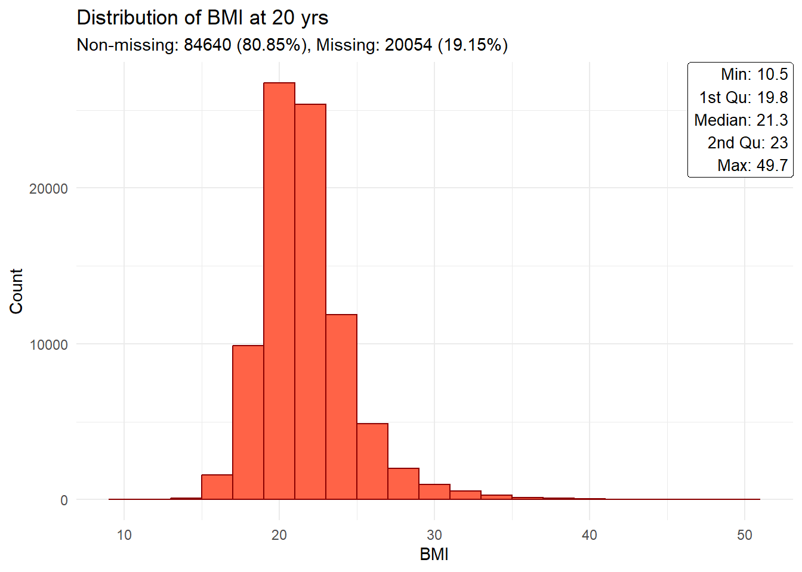

library(tidyverse)
library(survival)
library(ggsurvfit)
library(ggplot2)
library(ggtext)
library(gt)
#options(max.print=100)Generations Study
Introduction
This project focuses on modeling the time until first breast cancer incidence (including DCIS) in individuals who have not experienced previous invasive cancer with the Cox Proportional Hazards model. Individuals are censored at the point of development of nearly any cancer (see definitions below). The model incorporates known and established risk factors, including parity, menopause status, hormone replacement therapy usage, and others. The document is organized into four main sections:
- Setup (importing data, libraries, etc.)
- Pre-processing => Sanity checking, grouping, deriving survival data (e.g., time of censoring, event status), etc.
- Analysis => Kaplan-Meier plots, univariable and multivariable analyses
- Results => Visualisation of the results
The selection criteria and survival data creation are embedded within the relevant sections below.
Setup
Importing packages and setup
Global variables
Directory hidden (due to being public)
Importing data
# Cancer events:
dataset_ca <- read.csv(paste0(dataset_dir, "RDSCaSummary_V1.csv"), na.strings = c("NULL", ""))
# Risk factors:
dataset_rf <- read.csv(paste0(dataset_dir, "RDSRiskFactors.csv"), na.strings = c("NULL", ""))
# Deaths:
#dataset_deaths <- read.csv(paste0(dataset_dir, "Deaths.csv)"))
# Collections:
dataset_collections <- read.csv(paste0(dataset_dir, "RDSCollections_v1_Full.csv"), na.strings = "NULL")Pre-processing and sanity checking
General information
# Print number of rows
print(paste0('There are ', nrow(dataset_rf), ' rows in the risk factor dataset'))[1] "There are 116664 rows in the risk factor dataset"Sanity checking: Identification numbers
# For risk factor dataset:
# Print the number of correctly-formatted IDs
TCode_regex <- 'T\\d{3}[A-Z]\\d{3}'
cnt_crct_ids <- sum(grepl(TCode_regex, dataset_rf$TCode))
print(paste0('There are ', cnt_crct_ids, ' correctly-formatted IDs in risk factor dataset'))[1] "There are 116664 correctly-formatted IDs in risk factor dataset"# Print the number of empty IDs
empty_ids <- is.na(dataset_rf$TCode)
print(paste0('There are ', ifelse(sum(empty_ids) == 0, 'no', sum(empty_ids)), ' empty IDs in risk factor dataset, which will now be removed'))[1] "There are no empty IDs in risk factor dataset, which will now be removed"dataset_rf <- dataset_rf[!empty_ids,]
# Counting and removing duplicate IDs
dupl_ids <- which(duplicated(dataset_rf$TCode))
if(length(dupl_ids) == 0) {
print('There are no duplicate IDs')
} else {
print(paste0('There are ', length(dupl_ids), ' duplicate IDs in risk factor dataset, which will now be removed'))
dataset_rf <- dataset_rf[-dupl_ids,]
}[1] "There are no duplicate IDs"# For cancer summary dataset:
# Print the number of correctly-formatted IDs
TCode_regex <- 'T\\d{3}[A-Z]\\d{3}'
cnt_crct_ids <- sum(grepl(TCode_regex, dataset_ca$tcode))
print(paste0('There are ', cnt_crct_ids, ' correctly-formatted IDs in cancer summary dataset'))[1] "There are 38892 correctly-formatted IDs in cancer summary dataset"# Print the number of empty IDs
empty_ids <- is.na(dataset_ca$tcode)
print(paste0('There are ', ifelse(sum(empty_ids) == 0, 'no', sum(empty_ids)), ' empty IDs in cancer summary dataset, which will now be removed'))[1] "There are 5 empty IDs in cancer summary dataset, which will now be removed"dataset_ca <- dataset_ca[!empty_ids,]
# For collections dataset:
# Print the number of correctly-formatted IDs
TCode_regex <- 'T\\d{3}[A-Z]\\d{3}'
cnt_crct_ids <- sum(grepl(TCode_regex, dataset_collections$TCode))
print(paste0('There are ', cnt_crct_ids, ' correctly-formatted IDs in risk factor dataset'))[1] "There are 116664 correctly-formatted IDs in risk factor dataset"# Print the number of empty IDs
empty_ids <- is.na(dataset_collections$TCode)
print(paste0('There are ', ifelse(sum(empty_ids) == 0, 'no', sum(empty_ids)), ' empty IDs in risk factor dataset, which will now be removed'))[1] "There are no empty IDs in risk factor dataset, which will now be removed"dataset_collections <- dataset_collections[!empty_ids,]
# Counting and removing duplicate IDs
dupl_ids <- which(duplicated(dataset_collections$TCode))
if(length(dupl_ids) == 0) {
print('There are no duplicate IDs')
} else {
print(paste0('There are ', length(dupl_ids), ' duplicate IDs in risk factor dataset, which will now be removed'))
datas
}[1] "There are no duplicate IDs"Pre-processing: Risk factors
Configuration
# Specify missing/unknown labels
# Specify accepted range, lower and upper bounds are inclusive
# Categorical variables
# 1. Categorical (to turn into R factors)
# 2. Continuous -> Categorical: Specify range of values per band.
# The first of the named categories will be set as the reference level.
# Configuration list:
# The name of each element is the name of the pre-processed variable (ie,. the variable to process)
# 'varname': the name of the post-processed variable.
# 'realname': the real-world name of the variable.
# 'bands': for conversion of a continuous to a categorical variable.
# 'exp_range': the expected range of values for a continuous variable, values outside of this range will be set to NA
# 'unknown': the values the pre-processed variable takes on when there is missing information, these will be set to NA
# 'categories': the labels for the levels for a categorical variable.
rf_config <- list(
# Age at entry
'AgeatEntry' = list(
varname = 'ageentrygrp',
realname = 'Age at entry',
bands = c(16, 35, 45, 55, 65, 75, 102) # Michael
# c(-Inf, 35, 50, 60, 79, +Inf) # Louise ('1st grouping'):
# c(16, 35, 50, 60, 102) # Louise ('2nd grouping')
),
# Height
'bodysizeht' = list(
varname = 'bodysizeht',
realname = 'Height',
unknown = c(NA, 999, 989, 888), # Michael
# Louise keeps 777/888/999 intact
exp_range = c(140, 220) # Michael
# exp_range = c(140, 300) # Louise
),
# 'bodysizeht' = list(
# varname = 'heightgrp',
# realname = 'Height (group)',
# unknown = c(NA, 999, 989, 888),
# bands = c(140, 160, 165, 170, 175, 220) # Michael
# #bands = c(140, 165, 300) # Louise
# ),
'bodysizeht20' = list(
varname = 'bodysizeht20',
realname = 'Height at age 20',
unknown = c(NA, 999, 989, 888),
exp_range = c(140, 220) # Michael
),
# 'bodysizeht20' = list(
# varname = 'height20grp',
# realname = 'Height at age 20 (group)',
# unknown = c(NA, 999, 989, 888),
# bands = c(140, 160, 165, 170, 175, 220) # Michael
# ),
# Weight
'bodysizewt20' = list(
varname = 'bodysizewt20',
realname = 'Weight at age 20',
unknown = c(NA, 999),
exp_range = c(40, 200) # Michael
),
'bodysizewt20' = list(
varname = 'weight20grp',
realname = 'Weight at age 20 (group)',
unknown = c(NA, 999),
bands = c(40, 50, 55, 60, 70, 200) # Michael
),
#'bodysizewtnow' = list(
# varname = 'bodysizewtnow',
# unknown = c(NA, 999, 989, 888),
# exp_range = c(10, 200)
#),
# BMI
'bodysizebminow' = list(
varname = 'bminowgrp',
realname = 'BMI (group)',
unknown = c(NA, 999, 989, 888),
exp_range = c(10, 50), # Michael
#bands = c(-Inf, 10, seq(18.5, 25, 2.5), 50, +Inf), # Michael
bands = c(1, 20, 25, 100), # Louise
categories = c('< 20', '20-24', '>=25')
),
'bodysizebminow' = list(
varname = 'bodysizebminow',
realname = 'BMI',
unknown = c(NA, 999, 989, 888),
exp_range = c(10, 50)
),
'R2bodysizebmi' = list(
varname = 'R2bodysizebmi',
realname = 'BMI @ R2',
unknown = c(NA, 999, 989, 888),
exp_range = c(10, 50)
),
'R4bodysizebmi' = list(
varname = 'R4bodysizebmi',
realname = 'BMI @ R4',
unknown = c(NA, 999, 989, 888),
exp_range = c(10, 50)
),
# 'bodysizebmi20' = list(
# varname = 'bmi20grp',
# realname = 'BMI at age 20 (group)',
# unknown = c(NA, 999, 989),
# exp_range = c(10, 50), # Michael
# bands = c(-Inf, 10, seq(18.5, 25, 2.5), 50, +Inf) # Michael
# ),
'bodysizebmi20' = list(
varname = 'bodysizebmi20',
realname = 'BMI at age 20',
unknown = c(NA, 999, 989),
exp_range = c(10, 50) # Michael
),
# ACORN score
'ses' = list(
varname = 'ses',
realname = 'ACORN score',
unknown = c(NA, 0, 6),
categories = c('1'='Wealthy achievers', '2'='Urban prosperity', '3'='Comfortably off', '4'='Moderate means', '5'='Hard-pressed', '0' = 'Region not covered', '6'='Unclassified'),
ordered = TRUE
),
# Family history of breast cancer
'fambrca' = list(
varname = 'fambrca',
realname = 'Family history of breast cancer',
categories = c('0'='Absent', '1'='Present')
),
# Benign breast disease
'brbendis' = list(
varname = 'brbendis',
realname = 'Previous benign breast disease',
categories = c('2'='No', '1'='Yes')
),
# Birthweight
'birthweight' = list(
varname = 'birthweight',
realname = 'Birthweight (in grams)',
unknown = c(8888, 9999)
),
# HRT
# 'hrtprep' = list(
# varname = 'hrtprep',
# categories = c('1'='Estrogen', '2'='Estrogen and progesterone', '3'='Other', '9'='Not applicable')
# ),
'hrtstatus' = list(
varname = 'hrtstatus',
realname = 'HRT status',
unknown = c(NA, 888, 999, 9999), # Louise keeps 888/999/9999 intact (though only 999 actually appears in the data)
# More specifically, per Michael, 999 means they are either Current/former, but we don't know which.
categories = c('0'='Never', '1'='Former', '2'='Current')
),
# Menopause and menarche
'meno_age' = list(
varname = 'meno_age',
realname = 'Age at menopause',
unknown = c(NA, 777, 999)
),
'meno_age_est' = list(
varname = 'meno_age_est',
realname = 'Age at menopause (estimated)',
unknown = c(NA, 999)
),
'menarcheage' = list(
varname = 'menarchegrp',
realname = 'Age at menarche (group)',
unknown = c(NA, 777, 888, 999), # Michael
# Louise keeps 777/888/999 intact
bands = c(8, 11, 13, 15, 19) # Michael
#bands = c(-Inf, 13, +Inf) # Louise
),
'menarcheage' = list(
varname = 'menarcheage',
realname = 'Age at menarche (group)',
unknown = c(NA, 777, 888, 999)
),
# Physical activity:
# Michael keeps PhysMetTotal continuous and does a log base 2 (i.e a doubling), centered at log2(median)
'PhysMetTotal' = list(
varname = 'PhysMetTotalLog2',
realname = 'Total physical activity, log2 (MET hours/week)',
# unknown = c(NA, 8888, 9999), # Louise keeps these intact
# transform = function(x) { log2(x+10^-5) }
unknown = c(NA, 0, 8888, 9999), # Louise keeps these intact
transform = function(x) { log2(x) } # Michael just puts Met=0 into the missing group
),
'PhysMetTotal' = list(
varname = 'PhysMetTotal',
realname = 'Total physical activity, (MET hours/week)',
unknown = c(NA, 8888, 9999) # Louise keeps these intact
),
# Smoking:
'smokingstartage' = list(
varname = 'smokingstartage',
realname = 'Age started smoking',
unknown = c(NA, 666, 999)
),
# 'PhysMetTotal' = list(
# varname = 'physmettotalgrp',
# realname = 'Total physical activity (MET hours/week)',
# unknown = c(NA, 8888, 9999), # Louise keeps these intact
# bands = c(0, 25, 50, 75, 2000), # Louise
# categories = c('< 25', '25-49', '50-74', '> 75')
# ),
# Oral contraceptive status
'ocstatus' = list(
varname = 'ocstatus',
realname = 'Oral contraceptive status',
unknown = c(NA, 888, 999, 9999), # Louise keeps 888/999/9999 intact
categories = c('0' = 'Never', '1' = 'Former', '2' = 'Current')
),
# Parity
'pregparitycnt' = list(
varname = 'pregparitycnt',
realname = 'Parity count',
unknown = c(NA, 99)
# exp_range = c(-Inf, 20),
# bands = c(0, 1, 2, 3, +Inf)
),
'pregparitycnt' = list(
varname = 'pregparous',
realname = 'Parity status',
unknown = c(NA, 99),
bands = c(0, 1, +Inf),
categories = c('Nulliparous', 'Parous')
# split = list('Parous' =
# on = 'Parous',
# by = # Cannot complete as do not have breastfeeding information.
# categories = c('Parous (not breastfed)', 'Parous (breastfed)'))
)
# Age at thelarche (Michael's code)
# Birthweight (Michael's code)
)
# Programmatically adding repeated measures
# Breastfeeding duration
for(i in 1:9) {
bf_var <- paste0("bf_", i)
rf_config[[bf_var]] <- list(
varname = bf_var,
unknown = c(NA, 999),
exp_range = c(0, 208) # Arbitrary
)
}
# HRT-related
for(i in 1:4) {
for(tp in c('start', 'stop')) {
h_var <- paste0('HRT', tp, 'age_', i)
rf_config[[h_var]] <- list(
varname = h_var,
realname = paste0('HRT', tp, ' age ', i),
exp_range = c(1, 100) # Arbitrary
)
}
htype_var <- paste0("HRTtype1_", i)
rf_config[[htype_var]] <- list(
varname = htype_var,
realname = paste0('HRT type ', i)
)
}
# Questionnaire date-associated
var_names <- c('smokingstatus', 'alcoholstatus', 'alcoholunits', 'menopause')
for(v in var_names) {
for(i in 1:4) {
rf_var <- paste0('R',i,v)
# Menopausal status
if(v == 'menopause') {
rf_config[[rf_var]] <- list(
varname = rf_var,
realname = paste0('Menopausal status at @ R', i),
unknown = c(NA, 8, 9, 10), # Louise keeps 8/9/10 intact
categories = c('2' = 'Premenopausal', '4' = 'Premenopausal', '3' = 'Postmenopausal', '1' = 'Postmenopausal')
)
}
if(i %in% c(1,2,4)) {
# Smoking status
if(v == 'smokingstatus') {
rf_config[[rf_var]] <- list(
varname = rf_var,
realname = paste0('Smoking status at @ R', i),
unknown = c(NA, 6, 9),
categories = c('0' = 'Never', '1' = 'Former', '2' = 'Current')
)
# Alcohol status
} else if(v == 'alcoholstatus') {
rf_config[[rf_var]] <- list(
varname = rf_var,
realname = paste0('Alcohol status at @ R', i),
unknown = c(NA, 9),
categories = c('0' = 'Never', '1' = 'Current', '2' = 'Past')
)
# Alcohol units
} else if(v == 'alcoholunits') {
rf_config[[rf_var]] <- list(
varname = rf_var,
realname = paste0('Alcohol units at @ R', i),
unknown = c(NA)
)
}
}
}
}Pre-processing
I. (pre-autopreprocessing)
Derivation of dates, ages, parity count, etc.
# Assumes dates are in YMD format.
# Columns with date information:
# RiskFactor dataframe: DOB, EntryDate, datedueQ, fupca_start, fupca_end, pregdate_[1:9], etc.
# Fractional year difference between dates
# date1 = First date, chronologically
# date2 = Second date, chronologically
# 1. Takes every calendar year to be one unit
# 2. Everything trailing after that is calculated as an additional fraction, according to the number of days in that year (ie., factoring in leap years)
year_diff <- function(date1, date2) {
# Convert the dates to Date objects
date1 <- ymd(date1)
date2 <- ymd(date2)
years <- ifelse(!is.na(date1) & !is.na(date2),
time_length(interval(date1, date2), "year"),
NA)
}
#Demonstrating how lubridate handles leap years
#test_dob1 <- '2017-01-01'
#test_dob2 <- '2018-01-01'
#years <- year_diff(test_dob1, test_dob2)
#print(years)
# Risk factor dataset
dataset_rf <- dataset_rf %>% mutate(ADOB_F = as.Date(ymd_hms(ADOB_F)),
EntryDate_F = as.Date(ymd_hms(EntryDate_F)),
datedueQ_F = as.Date(ymd_hms(datedueQ_F)),
fupca_start_F = as.Date(ymd_hms(fupca_start_F)),
fupca_end_F = as.Date(ymd_hms(fupca_end_F))) %>%
mutate(across(starts_with('pregdate_'), \(x) as.Date(ymd_hms(x))))
# Cancer summary dataset
dataset_ca <- dataset_ca %>% mutate(diagdate_f = as.Date(ymd_hms(diagdate_f)))
# Collections dataset
dataset_collections <- dataset_collections %>% mutate(QR1_date_f = as.Date(ymd_hms(QR1_date_f)),
QR2_date_f = as.Date(ymd_hms(QR2_date_f)),
QR3_date_f = as.Date(ymd_hms(QR3_date_f)),
QR4_date_f = as.Date(ymd_hms(QR4_date_f)))
# Merging these questionnaire return dates with the risk factor data
dataset_rf <- dataset_rf %>% left_join(by="TCode", dataset_collections %>% select(TCode, QR1_date_f, QR2_date_f, QR3_date_f, QR4_date_f))
# Parity variable
# Recoding -1 (never pregnant) to 0 (nulliparous)
dataset_rf$pregparitycnt[!is.na(dataset_rf$pregparitycnt) & dataset_rf$pregparitycnt == -1] <- 0
# Menopausal status (pre vs menopausal), latest known from meno_age variable
dataset_rf$latest_menopausal_status <- factor(ifelse(dataset_rf$meno_age %in% c(NA, 999), NA, as.numeric(dataset_rf$meno_age != 777)), levels = c(0, 1), labels = c('Premenopausal', 'Menopausal'))
# Age at each delivery
# Derived from pregdate_[0:9]
dataset_rf <- dataset_rf %>%
mutate(across(starts_with('pregdate_'),
\(x) year_diff(ADOB_F, x),
.names = 'age_at_{.col}'))
# Age at dates of questionnaire returns
# Derived from QR2_date [0:9]
dataset_rf <- dataset_rf %>%
mutate(across(matches('^QR\\d+_date_'),
\(x) year_diff(ADOB_F, x),
.names = 'age_at_{.col}'))
# Age at dates of recruitment
dataset_rf$fupca_start_age <- year_diff(dataset_rf$ADOB_F, dataset_rf$fupca_start_F)
dataset_rf$EntryDate_age <- year_diff(dataset_rf$ADOB_F, dataset_rf$EntryDate_F)
# Body size variables:
under_20_mask <- dataset_rf$EntryDate_age < 20
over_20_mask <- dataset_rf$EntryDate_age >= 20
under_20_mask[is.na(under_20_mask)] <- FALSE
over_20_mask[is.na(over_20_mask)] <- FALSE
# Height at 20
ht20_missing_mask <- dataset_rf$bodysizeht20 %in% c(NA, 989, 999)
# Setting those with a defined height at 20 despite being less than 20 years old to NA
#dataset_rf[under_20_mask,'bodysizeht20'] <- NA
# In Michael's code, a missing height at 20 is updated to equal adult height, like so (though I am also checking if they were 20 at the time they gave the adult height measurement)
dataset_rf$bodysizeht20[ht20_missing_mask & over_20_mask] <- dataset_rf$bodysizeht[ht20_missing_mask & over_20_mask]
# Weight at 20
# Setting those with a defined weight at 20 despite being less than 20 years old to NA.
#dataset_rf[under_20_mask,'bodysizewt20'] <- NA
# BMI at 20
# Setting those with a defined BMI at 20 despite being less than 20 years old to NA.
#dataset_rf[under_20_mask,'bodysizebmi20'] <- NA
# In Michael's code, an additional 'bmi20_updated' variable is made using adult height, if height at 20 is missing.
dataset_rf$bodysizebmi20[ht20_missing_mask] <- dataset_rf$bodysizewt20[ht20_missing_mask] / (dataset_rf$bodysizeht20[ht20_missing_mask])^2II. (autopreprocessing)
# Code for applying the custom configuration file
for(idx in seq(1, length(rf_config))) {
var <- names(rf_config)[[idx]]
config = rf_config[[idx]]
varname = config$varname
dataset_rf[[varname]] <- dataset_rf[[var]]
print(paste0('Pre-processing \'', var, '\' => \'', varname, '\':'))
if(!is.null(config$unknown)) {
unk_vals <- config$unknown
unk_mask <- (dataset_rf[[varname]] %in% unk_vals)
print(paste0(' ', sum(unk_mask, na.rm=TRUE), ' (', round(sum(unk_mask, na.rm=TRUE) / nrow(dataset_rf), 4)*100,
'%) have a missing code.'))
dataset_rf[unk_mask,varname] <- NA
}
if(!is.null(config$exp_range)) {
accepted_range <- config$exp_range
outrange_mask <- !((dataset_rf[[varname]] >= accepted_range[1]) & (dataset_rf[[varname]] <= accepted_range[2]))
print(paste0(' ', sum(outrange_mask, na.rm=TRUE), ' of the \'', var, '\' variable are deemed outliers.'))
dataset_rf[!is.na(outrange_mask) & outrange_mask, varname] <- NA
}
if(!is.null(config$bands)) {
bands <- config$bands
labels <- config$categories
print(paste0(' ', "Grouping into: ", paste(bands, collapse = ", ")))
if(!is.null(names(labels))) {
dataset_rf[[varname]] <- cut(dataset_rf[[varname]], bands, labels = labels, include.lowest = TRUE, right = FALSE)
} else {
dataset_rf[[varname]] <- cut(dataset_rf[[varname]], bands, include.lowest = TRUE, right = FALSE)
}
}
if(!is.null(config$categories)) {
labels <- config$categories
print(paste0(' ', "Refactoring into: ", paste(labels, collapse = ", ")))
if(!is.null(names(labels))) {
dataset_rf[[varname]] <- factor(dataset_rf[[varname]], levels = names(labels), labels = labels, ordered = ifelse(is.null(config$ordered), FALSE, config$ordered))
} else {
dataset_rf[[varname]] <- factor(dataset_rf[[varname]], labels = labels, ordered = ifelse(is.null(config$ordered), FALSE, config$ordered))
}
}
if(!is.null(config$transform)) {
dataset_rf[[varname]] <- config$transform(dataset_rf[[varname]])
}
}[1] "Pre-processing 'AgeatEntry' => 'ageentrygrp':"
[1] " Grouping into: 16, 35, 45, 55, 65, 75, 102"
[1] "Pre-processing 'bodysizeht' => 'bodysizeht':"
[1] " 3367 (2.89%) have a missing code."
[1] " 60 of the 'bodysizeht' variable are deemed outliers."
[1] "Pre-processing 'bodysizeht20' => 'bodysizeht20':"
[1] " 4516 (3.87%) have a missing code."
[1] " 58 of the 'bodysizeht20' variable are deemed outliers."
[1] "Pre-processing 'bodysizewt20' => 'bodysizewt20':"
[1] " 7584 (6.5%) have a missing code."
[1] " 209 of the 'bodysizewt20' variable are deemed outliers."
[1] "Pre-processing 'bodysizewt20' => 'weight20grp':"
[1] " 7793 (6.68%) have a missing code."
[1] " Grouping into: 40, 50, 55, 60, 70, 200"
[1] "Pre-processing 'bodysizebminow' => 'bminowgrp':"
[1] " 6156 (5.28%) have a missing code."
[1] " 94 of the 'bodysizebminow' variable are deemed outliers."
[1] " Grouping into: 1, 20, 25, 100"
[1] " Refactoring into: < 20, 20-24, >=25"
[1] "Pre-processing 'bodysizebminow' => 'bodysizebminow':"
[1] " 6156 (5.28%) have a missing code."
[1] " 94 of the 'bodysizebminow' variable are deemed outliers."
[1] "Pre-processing 'R2bodysizebmi' => 'R2bodysizebmi':"
[1] " 15126 (12.97%) have a missing code."
[1] " 100 of the 'R2bodysizebmi' variable are deemed outliers."
[1] "Pre-processing 'R4bodysizebmi' => 'R4bodysizebmi':"
[1] " 39357 (33.74%) have a missing code."
[1] " 206 of the 'R4bodysizebmi' variable are deemed outliers."
[1] "Pre-processing 'bodysizebmi20' => 'bodysizebmi20':"
[1] " 6246 (5.35%) have a missing code."
[1] " 18395 of the 'bodysizebmi20' variable are deemed outliers."
[1] "Pre-processing 'ses' => 'ses':"
[1] " 4336 (3.72%) have a missing code."
[1] " Refactoring into: Wealthy achievers, Urban prosperity, Comfortably off, Moderate means, Hard-pressed, Region not covered, Unclassified"
[1] "Pre-processing 'fambrca' => 'fambrca':"
[1] " Refactoring into: Absent, Present"
[1] "Pre-processing 'brbendis' => 'brbendis':"
[1] " Refactoring into: No, Yes"
[1] "Pre-processing 'birthweight' => 'birthweight':"
[1] " 38182 (32.73%) have a missing code."
[1] "Pre-processing 'hrtstatus' => 'hrtstatus':"
[1] " 3419 (2.93%) have a missing code."
[1] " Refactoring into: Never, Former, Current"
[1] "Pre-processing 'meno_age' => 'meno_age':"
[1] " 58925 (50.51%) have a missing code."
[1] "Pre-processing 'meno_age_est' => 'meno_age_est':"
[1] " 2933 (2.51%) have a missing code."
[1] "Pre-processing 'menarcheage' => 'menarchegrp':"
[1] " 14535 (12.46%) have a missing code."
[1] " Grouping into: 8, 11, 13, 15, 19"
[1] "Pre-processing 'menarcheage' => 'menarcheage':"
[1] " 14535 (12.46%) have a missing code."
[1] "Pre-processing 'PhysMetTotal' => 'PhysMetTotalLog2':"
[1] " 6048 (5.18%) have a missing code."
[1] "Pre-processing 'PhysMetTotal' => 'PhysMetTotal':"
[1] " 3995 (3.42%) have a missing code."
[1] "Pre-processing 'smokingstartage' => 'smokingstartage':"
[1] " 77135 (66.12%) have a missing code."
[1] "Pre-processing 'ocstatus' => 'ocstatus':"
[1] " 3014 (2.58%) have a missing code."
[1] " Refactoring into: Never, Former, Current"
[1] "Pre-processing 'pregparitycnt' => 'pregparitycnt':"
[1] " 3087 (2.65%) have a missing code."
[1] "Pre-processing 'pregparitycnt' => 'pregparous':"
[1] " 3087 (2.65%) have a missing code."
[1] " Grouping into: 0, 1, Inf"
[1] " Refactoring into: Nulliparous, Parous"
[1] "Pre-processing 'bf_1' => 'bf_1':"
[1] " 30817 (26.42%) have a missing code."
[1] " 101 of the 'bf_1' variable are deemed outliers."
[1] "Pre-processing 'bf_2' => 'bf_2':"
[1] " 45232 (38.77%) have a missing code."
[1] " 107 of the 'bf_2' variable are deemed outliers."
[1] "Pre-processing 'bf_3' => 'bf_3':"
[1] " 93960 (80.54%) have a missing code."
[1] " 43 of the 'bf_3' variable are deemed outliers."
[1] "Pre-processing 'bf_4' => 'bf_4':"
[1] " 111904 (95.92%) have a missing code."
[1] " 17 of the 'bf_4' variable are deemed outliers."
[1] "Pre-processing 'bf_5' => 'bf_5':"
[1] " 115837 (99.29%) have a missing code."
[1] " 4 of the 'bf_5' variable are deemed outliers."
[1] "Pre-processing 'bf_6' => 'bf_6':"
[1] " 116468 (99.83%) have a missing code."
[1] " 0 of the 'bf_6' variable are deemed outliers."
[1] "Pre-processing 'bf_7' => 'bf_7':"
[1] " 116620 (99.96%) have a missing code."
[1] " 0 of the 'bf_7' variable are deemed outliers."
[1] "Pre-processing 'bf_8' => 'bf_8':"
[1] " 116655 (99.99%) have a missing code."
[1] " 0 of the 'bf_8' variable are deemed outliers."
[1] "Pre-processing 'bf_9' => 'bf_9':"
[1] " 116663 (100%) have a missing code."
[1] " 0 of the 'bf_9' variable are deemed outliers."
[1] "Pre-processing 'HRTstartage_1' => 'HRTstartage_1':"
[1] " 0 of the 'HRTstartage_1' variable are deemed outliers."
[1] "Pre-processing 'HRTstopage_1' => 'HRTstopage_1':"
[1] " 0 of the 'HRTstopage_1' variable are deemed outliers."
[1] "Pre-processing 'HRTtype1_1' => 'HRTtype1_1':"
[1] "Pre-processing 'HRTstartage_2' => 'HRTstartage_2':"
[1] " 1 of the 'HRTstartage_2' variable are deemed outliers."
[1] "Pre-processing 'HRTstopage_2' => 'HRTstopage_2':"
[1] " 0 of the 'HRTstopage_2' variable are deemed outliers."
[1] "Pre-processing 'HRTtype1_2' => 'HRTtype1_2':"
[1] "Pre-processing 'HRTstartage_3' => 'HRTstartage_3':"
[1] " 0 of the 'HRTstartage_3' variable are deemed outliers."
[1] "Pre-processing 'HRTstopage_3' => 'HRTstopage_3':"
[1] " 0 of the 'HRTstopage_3' variable are deemed outliers."
[1] "Pre-processing 'HRTtype1_3' => 'HRTtype1_3':"
[1] "Pre-processing 'HRTstartage_4' => 'HRTstartage_4':"
[1] " 0 of the 'HRTstartage_4' variable are deemed outliers."
[1] "Pre-processing 'HRTstopage_4' => 'HRTstopage_4':"
[1] " 0 of the 'HRTstopage_4' variable are deemed outliers."
[1] "Pre-processing 'HRTtype1_4' => 'HRTtype1_4':"
[1] "Pre-processing 'R1smokingstatus' => 'R1smokingstatus':"
[1] " 3038 (2.6%) have a missing code."
[1] " Refactoring into: Never, Former, Current"
[1] "Pre-processing 'R2smokingstatus' => 'R2smokingstatus':"
[1] " 7691 (6.59%) have a missing code."
[1] " Refactoring into: Never, Former, Current"
[1] "Pre-processing 'R4smokingstatus' => 'R4smokingstatus':"
[1] " 37262 (31.94%) have a missing code."
[1] " Refactoring into: Never, Former, Current"
[1] "Pre-processing 'R1alcoholstatus' => 'R1alcoholstatus':"
[1] " 2907 (2.49%) have a missing code."
[1] " Refactoring into: Never, Current, Past"
[1] "Pre-processing 'R2alcoholstatus' => 'R2alcoholstatus':"
[1] " 2907 (2.49%) have a missing code."
[1] " Refactoring into: Never, Current, Past"
[1] "Pre-processing 'R4alcoholstatus' => 'R4alcoholstatus':"
[1] " 2907 (2.49%) have a missing code."
[1] " Refactoring into: Never, Current, Past"
[1] "Pre-processing 'R1alcoholunits' => 'R1alcoholunits':"
[1] " 4164 (3.57%) have a missing code."
[1] "Pre-processing 'R2alcoholunits' => 'R2alcoholunits':"
[1] " 35850 (30.73%) have a missing code."
[1] "Pre-processing 'R4alcoholunits' => 'R4alcoholunits':"
[1] " 55670 (47.72%) have a missing code."
[1] "Pre-processing 'R1menopause' => 'R1menopause':"
[1] " 2933 (2.51%) have a missing code."
[1] " Refactoring into: Premenopausal, Premenopausal, Postmenopausal, Postmenopausal"
[1] "Pre-processing 'R2menopause' => 'R2menopause':"
[1] " 7591 (6.51%) have a missing code."
[1] " Refactoring into: Premenopausal, Premenopausal, Postmenopausal, Postmenopausal"
[1] "Pre-processing 'R3menopause' => 'R3menopause':"
[1] " 9788 (8.39%) have a missing code."
[1] " Refactoring into: Premenopausal, Premenopausal, Postmenopausal, Postmenopausal"
[1] "Pre-processing 'R4menopause' => 'R4menopause':"
[1] " 35949 (30.81%) have a missing code."
[1] " Refactoring into: Premenopausal, Premenopausal, Postmenopausal, Postmenopausal"III. (post-autopreprocessing)
# Creating a total breastfeeding duration variable (this is cumulative over every breastfeed)
bf_cols <- colnames(dataset_rf)[grepl('^bf_\\d$', colnames(dataset_rf))]
dataset_rf$bf_total <- rowSums(dataset_rf[,bf_cols], na.rm=TRUE)
preg_cols <- colnames(dataset_rf)[grepl('^age_at_pregdate_\\d_f$', colnames(dataset_rf))]
# Smoking, refactoring
dataset_rf$R1smokingstartage <- ifelse(dataset_rf$smokingstartage <= dataset_rf$age_at_QR1_date_f, dataset_rf$smokingstartage, NA)
R1smokingcategories <- cut(dataset_rf$R1smokingstartage, breaks=c(-Inf, 17, 20, +Inf), right=FALSE)
dataset_rf$R1smokingcategory <- as.factor(ifelse(dataset_rf$R1smokingstatus %in% c('Current', 'Former'), as.character(R1smokingcategories), ifelse(dataset_rf$R1smokingstatus == 'Never', 'Never', NA)))
dataset_rf$R1smokingcategory <- relevel(dataset_rf$R1smokingcategory, ref='Never')
# Creating a breastfeeding duration at time point t (e.g., fupca_start_age)
# Function to calculate breastfeeding weeks until recruitment
calculate_bf_weeks <- function(delivery_date, bf_weeks, recruitment_start) {
#browser()
if (is.na(delivery_date) || is.na(bf_weeks)) {
return(0)
} else if(is.na(recruitment_start)) {
return(NA)
} else {
breastfeeding_end_date <- delivery_date + (bf_weeks * 7)
weeks_until_recruitment <- as.integer(difftime(min(breastfeeding_end_date, recruitment_start), delivery_date, units = "weeks"))
# If negative (ie., delivery was after recruitment), return 0, otherwise return the calculated weeks
return(max(weeks_until_recruitment, 0))
}
}
dataset_rf$bf_at_recruitment <- 0
for (i in 1:9) {
delivery_date_col <- paste0("pregdate_", i, "_f")
bf_duration_col <- paste0("bf_", i)
# Calculate breastfeeding weeks for each row and add to the total
dataset_rf$bf_at_recruitment <- dataset_rf$bf_at_recruitment + mapply(calculate_bf_weeks,
dataset_rf[[delivery_date_col]],
dataset_rf[[bf_duration_col]],
dataset_rf$EntryDate_F)
}
# If missing on all bf_* columns, then set bf_at_recruitment to NA
dataset_rf$bf_at_recruitment[rowSums(!is.na(dataset_rf[,bf_cols]))==0] <- NA
# If nulliparous, then set bf_at_recruitment to 0 (? pregparous is at recruitment, right?)
dataset_rf$bf_at_recruitment[dataset_rf$pregparous=="Nulliparous"] <- 0Cohort and survival data
Definition of subcohort
The subcohort for subsequent analysis, selected from the entire cohort, was selected by:
- Exclusion of those with previous cancer (prior to their follow-up start date).
- ICD10: Code starting with C (Malignant neoplasm), except for C44 (Other and unspecified malignant neoplasm of skin)
- ICD9: Code starting with 1 (Malignant neoplasm), except for 173 (Other and unspecified malignant neoplasm of skin)
- ICD9: Code starting with 20 (Malignant Neoplasm Of Lymphatic And Hematopoietic Tissue)
- ICD10: Code starting with D059 (Carcinoma in situ of breast)
- ICD10: Code starting with D051 (Intraductal carcinoma in situ of breast)
- ICD9: Code starting with 2330 (Carcinoma in situ of breast)
- Exclusion of those who have not returned the initial questionnaire.
- Exclusion of those who fell outside the cohort window (fupca_end_reason == 99).
- Exclusion of those who left the study on the same day they entered.
- Exclusion of those who have a missing follow-up end date.
# ? Necessary to implement sanity checking for dates of diagnosis < DOB
# Arguments:
# rf_df: Risk factor dataframe
# ca_df: Cancer event dataframe
# ca_icdt: String vector for the ICD codes to exclude if prevalent. If 'all', then all prevalent cancer cases will be excluded.
# Returns: An updated risk factor dataframe with the prevalent cases removed
exclude_prevalent <- function(rf_df, ca_df, ca_icdt, regex = FALSE) {
# Support input of either regex or a vector of strings
if(!regex) {
ca_icdt_regex <- paste0("^(", paste(ca_icdt, collapse = "|"), ")")
} else {
ca_icdt_regex <- ca_icdt
}
ca_rf_merged <- ca_df %>% select(tcode, diagdate_f, ICDt) %>% left_join(rf_df %>% select(TCode, ADOB_F, fupca_start_F), by = c("tcode" = "TCode"))
if('all' %in% ca_icdt) {
tcodes_to_exclude <- ca_rf_merged %>% filter(diagdate_f <= fupca_start_F) %>%
select(tcode) %>% unique() %>% pull(tcode)
} else {
tcodes_to_exclude <- ca_rf_merged %>% filter(grepl(ca_icdt_regex, ICDt, perl=TRUE) & diagdate_f <= fupca_start_F) %>% # Prevalent = On (to remove diagnoses on the day of recruitment) OR before
select(tcode) %>% unique() %>% pull(tcode)
}
return(rf_df %>% filter(!(TCode %in% tcodes_to_exclude)))
}
obs_number <- nrow(dataset_rf)
# Drop prevalent cases (same pattern matching as for what constitutes a 'censored' timepoint)
dataset_rf <- exclude_prevalent(dataset_rf, dataset_ca, "^(C(?!44)[0-9]+|1(?!73)[0-9]+|20|D051|D059|2330)", regex=TRUE)
print(paste0(obs_number-nrow(dataset_rf), ' participants were prevalent for cancer and excluded.'))[1] "8924 participants were prevalent for cancer and excluded."obs_number <- nrow(dataset_rf)
# Drop those with unknown follow-up end times (the majority of which are due to unreturned questionnaire)
dataset_rf <- dataset_rf[!is.na(dataset_rf$fupca_end_F),]
print(paste0(obs_number-nrow(dataset_rf), ' participants had unknown follow-up end times and were excluded.'))[1] "2909 participants had unknown follow-up end times and were excluded."obs_number <- nrow(dataset_rf)
# Drop those outside of cohort window (fupca_end_reason == 99)
dataset_rf <- dataset_rf[dataset_rf$fupca_end_reason != 99,]
print(paste0(obs_number-nrow(dataset_rf), ' participants were \'outside the cohort window\' (end reason of 99) and were excluded.'))[1] "23 participants were 'outside the cohort window' (end reason of 99) and were excluded."obs_number <- nrow(dataset_rf)
# Drop those with a follow-up end time equal to follow-up start time (? No time spent in study)
dataset_rf <- dataset_rf[dataset_rf$fupca_start_F != dataset_rf$fupca_end_F,]
print(paste0(obs_number-nrow(dataset_rf), ' participants left the study on the same day they entered and were excluded.'))[1] "114 participants left the study on the same day they entered and were excluded."Survival data preparation
An event is defined as the first occurrence of breast cancer, defined as either invasive or DCIS. a. ICD10 codes: Starting with C50 (Malignant neoplasm of breast), D051, or D059 (DCIS) b. ICD9 codes: Starting with 174 (Malignant neoplasm of female breast) or 2330 (DCIS) Censoring is applied at the first occurrence of any cancer, as defined in the previous section (under subcohort definition).
For every TCode, we find all the corresponding records in the cancer dataset. The same day can have multiple records, in which case if any of the records is an event (ie., invasive breast cancer or DCIS), that person is automatically labelled as an event on that day (in this way, the event detection is greedy). This means that if a person has multiple records on the same day, one of which is an event (while the other is a censor but non-event), then that person will be tagged as an event on that day; in other words, if a person has a diagnosis of breast cancer and ovarian cancer on the same day, they will be tagged as an event rather than censored without counting the event. There are seven participants who have the latter scenario, where one of the two records on the same day is labelled as an event (due to it matching a breast cancer ICD code), while the other record matches censoring (but is a non-event). In these cases, all of these participants would be labelled as having an event.
The date of censoring is determined as the earliest of: the earliest event date (within the bounds of the follow-up time), the earliest censor date (within the bounds of the follow-up time), and the follow-up end date. The follow-up start dates and dates of censoring are then converted into (leap-year accounting) years from birth (ie., into age at follow-up start and age at censoring).
# Censoring criteria is minimum of: Event of interest, censoring event (e.g., any invasive cancer), follow-up time ended.
# Per Michael's definitions:
# Define event of interest (e.g., breast cancer c('C50', '174', 'D051', 'D059', '2330'))
# Define censoring event (union of event of interest + c('C' [except C44], '1' [except 173], '20', 'D051', 'D059', '2330'))
# Return: Each row in rf will have: tcode, event (0, 1), time contributed (ie., time to event or censored)
prepare_survival_data <- function(rf_df, ca_df, event_icdt, cens_icdt, regex = FALSE) {
#browser()
# Support input of either regex or a vector of strings
if(!regex) {
event_icdt_regex <- paste0("^(", paste(event_icdt, sep = "|"), ")")
cens_icdt_regex <- paste0("^(", paste(cens_icdt, sep = "|"), ")")
} else {
event_icdt_regex <- event_icdt
cens_icdt_regex <- cens_icdt
}
ca_rf_merged <- rf_df %>% select(TCode, ADOB_F, fupca_start_F, fupca_end_F) %>%
left_join(ca_df %>% select(tcode, ICDt, diagdate_f, Reginfo_Clusterino, Report_Cluster) %>%
mutate(Reginfo_Clusterino = ifelse(Reginfo_Clusterino == 0, 999, Reginfo_Clusterino),
Report_Cluster = ifelse(Report_Cluster == 0, 999, Report_Cluster)), by = c("TCode" = "tcode"))
# Pre-calculate event and censor indicators (? faster)
# For every cancer record within the follow-up window (between follow-up start and follow-up end dates), we record whether this record counts as an 'event' (ie., invasive breast cancer or DCIS) and/or whether it counts as a point in time whereafter we would censor the individual (ie., an event or cancers as defined above).
ca_rf_merged <- ca_rf_merged %>%
mutate(
is_event = grepl(event_icdt_regex, ICDt, perl = TRUE) & diagdate_f >= fupca_start_F & diagdate_f <= fupca_end_F,
is_censor = grepl(cens_icdt_regex, ICDt, perl = TRUE) & diagdate_f >= fupca_start_F & diagdate_f <= fupca_end_F
)
# Create survival data dataframe
# To visualise cases with multiple records per TCode per day, and where there is a record with an event and another non-event but censor, set this function as a breakpoint and execute the following:
# filtered_records <- ca_rf_merged %>%
# group_by(TCode, diagdate_f) %>%
# filter(n() >= 2) %>% # Keep only groups with 2 or more records
# filter(any(is_event == TRUE) & any(is_event == FALSE & is_censor == TRUE)) %>% #
# ungroup()
survival_data <- ca_rf_merged %>%
arrange(diagdate_f) %>% #, Reginfo_Clusterino, Report_Cluster) %>%
group_by(TCode) %>%
summarize(
earliest_event_date = first(diagdate_f[is_event]),
earliest_censor_date = first(diagdate_f[is_censor]),
event = ifelse(!is.na(earliest_event_date) && (is.na(earliest_censor_date) || earliest_event_date <= earliest_censor_date), 1, 0),
c_date = as.Date(pmin(ifelse(event == 1, earliest_event_date, ifelse(!is.na(earliest_censor_date), earliest_censor_date, fupca_end_F)))),
ADOB_F = first(ADOB_F),
fupca_start_F = first(fupca_start_F),
fupca_end_F = first(fupca_end_F)
#c_age = year_diff(first(DOB), c_date),
#fup_years = year_diff(first(fupca_start), c_age)
) %>%
ungroup()
survival_data$fupca_start_age <- year_diff(survival_data$ADOB_F, survival_data$fupca_start_F)
survival_data$c_age <- year_diff(survival_data$ADOB_F, survival_data$c_date)
survival_data$fup_years <- year_diff(survival_data$fupca_start_F, survival_data$c_date)
return(survival_data)
}
# Define patterns to match to label events and censoring events appropriately
event_regex <- "^(C50|174|D051|D059|2330)" # identify invasive or DCIS-breast cancer
cens_regex <- "^(C(?!44)[0-9]+|1(?!73)[0-9]+|20|D051|D059|2330|C50|174)" # any invasive cancer (including breast cancer) and DCIS-breast cancer (exclude NMSC)
# TODO: ? Include some pre-sets (e.g., for ovarian ca, or just invasive breast ca, etc.)
survival_data <- prepare_survival_data(dataset_rf, dataset_ca, event_regex, cens_regex, regex = TRUE) ## completeVisualisation: Survival data
Helper function for plotting:
plot_distribution_with_missing_ggplot <- function(dataset, variable_name, binwidth = NULL, title = NULL, x_label = NULL, force_categorical=FALSE) {
# Dataset with dropped NA values for the specified variable
clean_dataset <- dataset %>% drop_na(!!sym(variable_name))
# Total observations
total_observations <- nrow(dataset)
# Calculate non-missing and missing counts
non_missing_count <- nrow(clean_dataset)
missing_count <- sum(is.na(dataset[[variable_name]]))
# Calculate percentages
percentage_non_missing <- (non_missing_count / total_observations) * 100
percentage_missing <- (missing_count / total_observations) * 100
# Subtitle text
subtitle_text <- paste0("Non-missing: ", non_missing_count, sprintf(" (%.2f%%)", percentage_non_missing),
", Missing: ", missing_count, sprintf(" (%.2f%%)", percentage_missing))
# Determine if the variable is categorical or continuous
if(force_categorical || is.factor(dataset[[variable_name]]) || is.character(dataset[[variable_name]])) {
# Categorical variable
# Create a summary data frame
clean_dataset[[variable_name]] <- as.factor(clean_dataset[[variable_name]])
summary_df <- clean_dataset %>%
group_by(!!sym(variable_name)) %>%
summarise(Count = n(), Percentage = (Count / non_missing_count) * 100)
plot <- ggplot(summary_df, aes_string(x = variable_name, y = 'Count', fill = variable_name)) +
geom_bar(stat = 'identity', color='black') +
geom_text(aes(label = sprintf("%.1f%%", Percentage)), vjust = -0.5, size = 3) +
theme(legend.position="none")
} else {
stats_text <- paste0("Min: ", round(min(clean_dataset[[variable_name]], na.rm = TRUE),2),
"\n1st Qu: ", round(quantile(clean_dataset[[variable_name]], probs=0.25, na.rm = TRUE), 2),
"\nMedian: ", round(median(clean_dataset[[variable_name]], na.rm = TRUE), 2),
"\n2nd Qu: ", round(quantile(clean_dataset[[variable_name]], probs=0.75, na.rm = TRUE), 2),
"\nMax: ", round(max(clean_dataset[[variable_name]], na.rm = TRUE), 2))
# Continuous variable
plot <- ggplot(clean_dataset, aes_string(x = variable_name)) +
geom_histogram(color='darkred', fill='tomato', binwidth = binwidth) +
annotate(geom = "label", x = Inf, y = Inf, label = stats_text, hjust = 1, vjust = 1,
color = "black", size = 3.5, fill = "white")
}
# Add labels, subtitle, and annotations
plot +
labs(title = paste('Distribution of', ifelse(!is.null(title), title, variable_name)), subtitle = subtitle_text, x = ifelse(!is.null(x_label), x_label, variable_name), y = 'Count') +
theme_minimal() +
theme(legend.position="none")
# geom_textbox(width = unit(0.4, "npc"), x = Inf, y = Inf, hjust = 1, vjust = 1, label = stats_text) #
}plot_distribution_with_missing_ggplot(survival_data, "fupca_start_age", binwidth=1, title="ages at follow-up start", x_label="Years")Warning: `aes_string()` was deprecated in ggplot2 3.0.0.
Please use tidy evaluation idioms with `aes()`.
See also `vignette("ggplot2-in-packages")` for more information.plot_distribution_with_missing_ggplot(survival_data, "c_age", binwidth=1, title="ages at censoring", x_label="Years")plot_distribution_with_missing_ggplot(survival_data, "fup_years", binwidth=1, title="years of follow-up time", x_label="Years")
##
## Total incidence rate
##
table(survival_data$event, useNA="always")
0 1 <NA>
101061 3633 0 survival_data$time_in_study <- year_diff(survival_data$fupca_start_F, survival_data$fupca_end_F)
cumulative_pyrs_in_study <- sum(survival_data$time_in_study)
incidence_rate_100k_pyrs <- (sum(survival_data$event)/cumulative_pyrs_in_study)*100000
print(paste0('There is a total of ', round(cumulative_pyrs_in_study, 2), ' person-years in this subcohort.'))[1] "There is a total of 1259718.11 person-years in this subcohort."print(paste0('The overall incidence rate is ', round(incidence_rate_100k_pyrs, 2), ' / 100k person-years.'))[1] "The overall incidence rate is 288.4 / 100k person-years."##
## Incidence rate per age bracket
##
breaks <- c(1, 5, 10, 15, 20, 25, 30, 35, 40, 45, 50, 55, 60, 65, 70, 75, 80, 85, 90)
labels <- c("Under 1", "1-4", "5-9", "10-14", "15-19", "20-24", "25-29", "30-34", "35-39", "40-44",
"45-49", "50-54", "55-59", "60-64", "65-69", "70-74", "75-79", "80-84", "85-89", "90 and over")
# Using survSplit to split by age bracket
survival_data$fupca_end_age <- survival_data$fupca_start_age + survival_data$time_in_study
split_data <- survSplit(Surv(time = fupca_start_age, time2 = fupca_end_age, event = event) ~ .,
data = survival_data,
cut = breaks,
start = "age_start",
end = "age_stop",
event = "event",
episode = "age_bracket")
# Correcting the time of event (matching to the appropriate age bracket)
split_data$event_age <- year_diff(split_data$ADOB_F, split_data$earliest_event_date)
split_data$event <- ifelse(!is.na(split_data$event_age) &
split_data$event_age >= split_data$age_start & split_data$event_age <= split_data$age_stop, 1,0)
present_labels <- labels[unique(split_data$age_bracket)[order(unique(split_data$age_bracket))]]
split_data$age_bracket <- factor(split_data$age_bracket, labels = present_labels)
summary_data <- split_data %>%
arrange(age_bracket) %>% group_by(age_bracket) %>%
summarize(events = sum(event),
person_years = sum(age_stop - age_start)) %>%
mutate(incidence_rate_per_100k = (events / person_years) * 100000)
print(summary_data)# A tibble: 16 4
age_bracket events person_years incidence_rate_per_100k
<fct> <dbl> <dbl> <dbl>
1 15-19 0 1504. 0
2 20-24 1 16018. 6.24
3 25-29 9 44164. 20.4
4 30-34 41 80354. 51.0
5 35-39 119 112140. 106.
6 40-44 236 132892. 178.
7 45-49 419 143792. 291.
8 50-54 527 149022. 354.
9 55-59 512 154264. 332.
10 60-64 640 156243. 410.
11 65-69 606 131386. 461.
12 70-74 362 81448. 444.
13 75-79 159 37295. 426.
14 80-84 56 14077. 398.
15 85-89 25 4182. 598.
16 90 and over 6 937. 640. # print(table(split_data$event, split_data$age_bracket))
# Incidence rate
ggplot(summary_data, aes(x = age_bracket, y = incidence_rate_per_100k)) +
geom_line(aes(group = 1), color = "royalblue") +
geom_point(color = "blue", size=2) +
theme(axis.text.x = element_text(angle = 45, hjust = 1)) +
labs(
title = "Incidence Rate by Age Group",
x = "Age Group",
y = "Incidence Rate per 100,000"
)
# Person-years
ggplot(summary_data, aes(x = age_bracket, y = person_years)) +
geom_bar(stat = "identity", fill = "darkgreen", color="black") +
theme(axis.text.x = element_text(angle = 45, hjust = 1)) +
labs(
title = "Person-years Contributed by Age Group",
x = "Age Group",
y = "Person-years"
)##
## Incidence rate per time since study start (calendar time)
##
first_fupca_start <- min(survival_data$fupca_start_F)
survival_data$fupca_start_since_study_start <- year_diff(first_fupca_start, survival_data$fupca_start_F)
survival_data$fupca_end_since_study_start <- year_diff(first_fupca_start, survival_data$fupca_end_F)
study_duration <- max(survival_data$fupca_end_since_study_start) - min(survival_data$fupca_start_since_study_start)
breaks <- seq(0, ceiling(study_duration))
labels <- paste(breaks[-length(breaks)], breaks[-1], sep = "-")
# Using survSplit again to split by time since study start (first person's entry)
split_data <- survSplit(Surv(time = fupca_start_since_study_start, time2 = fupca_end_since_study_start, event = event) ~ .,
data = survival_data,
cut = breaks,
start = "years_since_start_start",
end = "years_since_start_end",
event = "event",
episode = "study_duration_bracket")
# Correcting the time of event (matching to the appropriate age bracket)
split_data$event_time_since_study_start <- year_diff(first_fupca_start, split_data$earliest_event_date)
split_data$event <- ifelse(!is.na(split_data$event_time_since_study_start) &
split_data$event_time_since_study_start >= split_data$years_since_start_start & split_data$event_time_since_study_start <= split_data$years_since_start_end, 1,0)
split_data$study_duration_bracket <- factor(split_data$study_duration_bracket, labels=labels)
# For calculating average age in each bracket
split_data$age_at_bracket_start <- year_diff(first_fupca_start, split_data$fupca_start_F) + split_data$years_since_start_start + split_data$fupca_start_age
split_data$age_at_bracket_end <- year_diff(first_fupca_start, split_data$fupca_start_F) + split_data$years_since_start_end + split_data$fupca_start_age
split_data$midpoint_age <- (split_data$age_at_bracket_start + split_data$age_at_bracket_end) / 2
summary_data <- split_data %>%
arrange(study_duration_bracket) %>%
group_by(study_duration_bracket) %>%
summarize(
events = sum(event),
person_years = sum(years_since_start_end - years_since_start_start),
avg_age = (sum(midpoint_age * (years_since_start_end - years_since_start_start))) / person_years,
.groups = 'drop'
) %>%
mutate(incidence_rate_per_100k = (events / person_years) * 100000)
# Calculate cumulative person-years
summary_data <- summary_data %>%
mutate(cumulative_person_years = cumsum(person_years))
print(summary_data)# A tibble: 24 6
study_duration_bracket events person_years avg_age incidence_rate_per_100k
<fct> <dbl> <dbl> <dbl> <dbl>
1 0-1 0 29.2 51.7 0
2 1-2 1 646. 50.1 155.
3 2-3 14 5503. 49.9 254.
4 3-4 53 16415. 52.0 323.
5 4-5 83 31807. 54.1 261.
6 5-6 128 50069. 55.9 256.
7 6-7 158 69420. 57.6 228.
8 7-8 201 84995. 59.3 236.
9 8-9 269 94654. 60.7 284.
10 9-10 278 99711. 61.9 279.
# 14 more rows
# 1 more variable: cumulative_person_years <dbl># Incidence rate
ggplot(summary_data, aes(x = study_duration_bracket, y = incidence_rate_per_100k)) +
geom_line(aes(group = 1), color = "royalblue") +
geom_point(color = "blue", size = 2) +
theme(axis.text.x = element_text(angle = 45, hjust = 1)) +
labs(
title = "Incidence Rate Over Time Since Study Start",
x = "Years since study start (subcohort)",
y = "Incidence Rate per 100,000"
)# Average age
ggplot(summary_data, aes(x = study_duration_bracket, y = avg_age)) +
geom_line(aes(group = 1), color = "tomato") + # Ensure points are connected by a line
geom_point(color = "darkred", size = 2) +
theme(axis.text.x = element_text(angle = 45, hjust = 1)) + # Rotate x-axis labels
labs(
title = "Average Age Over Time Since Study Start",
x = "Years since study start (subcohort)",
y = "Average Age"
)# Cumulative person-years
ggplot(summary_data, aes(x = study_duration_bracket, y = cumulative_person_years)) +
geom_line(aes(group = 1), color = "forestgreen") + # Ensure points are connected by a line
geom_point(color = "darkgreen", size = 2) +
geom_bar(stat = "identity", fill = "darkgreen", color="black",
aes(x = study_duration_bracket, y = person_years)) +
theme(axis.text.x = element_text(angle = 45, hjust = 1)) + # Rotate x-axis labels
labs(
title = "Cumulative Person-Years Over Time Since Study Start",
x = "Years since study start (subcohort)",
y = "Cumulative Person-Years"
)# TODO: ? TODO: Implement reason for censoring/end of follow-up TODO: Implement breast cancer morphology labeling (ductal, mucinous, etc.)Visualisation: Risk factors
options(scipen=5)
# Distribution of age at entry
plot_distribution_with_missing_ggplot(dataset_rf, 'AgeatEntry', title="Age at Entry", x_label = "Age",binwidth=2)
# Distribution of Ethnicity ('ethnew5')
# table_data <- table(dataset_rf$ethnew5)
# bp <- barplot(table_data, main="Distribution of Ethnicity ('ethnew5')", xlab='Ethnicity', ylab='Frequency', col='tomato', ylim=c(0, max(table_data)*1.2))
# text(x=bp, y=table_data, labels=paste0(round(table_data/sum(table_data)*100,2), '%'), pos=3, col='black')
# Distribution of FHx of Breast ca
plot_distribution_with_missing_ggplot(dataset_rf, 'fambrca', title="FHx of Breast Cancer", x_label = "Age")# Distribution of hx of benign breast disease ('brbendis')
plot_distribution_with_missing_ggplot(dataset_rf, 'brbendis', title="PMHx of Benign Breast Disease", x_label = "Age")# Distribution of SES ('ses')
plot_distribution_with_missing_ggplot(dataset_rf, 'ses', title="Socioeconomic status", x_label = "SES")# Distribution of Height at 20 ('bodysizeht20')
plot_distribution_with_missing_ggplot(dataset_rf, 'bodysizeht20', binwidth=2, title="Height at 20 yrs", x_label = "Height")# Distribution of BMI at 20 ('bodysizebmi20')
plot_distribution_with_missing_ggplot(dataset_rf, 'bodysizebmi20', binwidth=2, title="BMI at 20 yrs", x_label = "BMI")
# Distribution of BMI at recruitment ('bodysizebminow')
plot_distribution_with_missing_ggplot(dataset_rf, 'bodysizebminow', binwidth=2, title="BMI at Recruitment", x_label = "BMI")# Age at menarche ('menarcheage')
plot_distribution_with_missing_ggplot(dataset_rf, 'menarcheage', binwidth=2, title="Age at Menarche", x_label = "Age")# Age at 1st pregnancy ('age_at_pregdate_1_f')
plot_distribution_with_missing_ggplot(dataset_rf, 'age_at_pregdate_1_f', binwidth=2, title="Age at First Pregnancy", x_label = "Age")# # Breastfeeding duration (at recruitment) ('bf_at_recruitment')
plot_distribution_with_missing_ggplot(dataset_rf, 'bf_at_recruitment', binwidth=4, title="Breastfeeding Duration at Recruitment", x_label = "Weeks")# # Breastfeeding duration (total) ('bf_*')
# bf_cols <- colnames(dataset_rf)[grepl('^bf_\\d', colnames(dataset_rf))]
# bf_dataset <- dataset_rf[bf_cols]
# individuals_missing <- sum(apply(bf_dataset, 1, function(x) all(is.na(x))))
# percentage_missing <- (individuals_missing / nrow(bf_dataset)) * 100
# subtitle_text <- paste0("Any non-missing: ", nrow(bf_dataset)-individuals_missing, sprintf(" (%.2f%%)", (100 - percentage_missing)), ", All missing: ", individuals_missing, sprintf(" (%.2f%%)", percentage_missing))
# bf_dataset %>%
# pivot_longer(cols = everything(), values_to = "Duration") %>%
# drop_na(Duration) %>%
# ggplot(aes(x = Duration)) +
# geom_histogram(binwidth = 4, color='darkred', fill='tomato') +
# labs(title = 'Distribution of Breastfeeding Duration (across all)',
# subtitle = subtitle_text,
# x = 'Duration (in weeks)',
# y = 'Count')
# Distribution of parity status ('pregparous')
plot_distribution_with_missing_ggplot(dataset_rf, 'pregparous', title="Parity Status")# Distribution of parity count ('pregparitycnt')
plot_distribution_with_missing_ggplot(dataset_rf, 'pregparitycnt', force_categorical=TRUE, title="Parity Count")# Age at menopause (reported; 'meno_age')
plot_distribution_with_missing_ggplot(dataset_rf, 'meno_age', binwidth=2, title="Age at Menopause (reported)", x_label = "Age")# Age at menopause (estimated; 'meno_age_est')
plot_distribution_with_missing_ggplot(dataset_rf, 'meno_age_est', binwidth=2, title="Age at Menopause (estimated)", x_label = "Age")# Menopausal status at R1, R2, R3, and R4
meno_cols <- c('R1menopause', 'R2menopause', 'R3menopause', 'R4menopause')
dataset_rf %>% select(meno_cols) %>% pivot_longer(cols = everything(), names_to = "R", values_to = "MenopauseStatus") %>%
ggplot(aes(x = R, fill = MenopauseStatus)) + geom_bar(position = "dodge", color = "black") + labs(title = "Menopausal Status by Questionnaire Round", x = "Round", y = "Count")Warning: Using an external vector in selections was deprecated in tidyselect 1.1.0.
Please use `all_of()` or `any_of()` instead.
# Was:
data %>% select(meno_cols)
# Now:
data %>% select(all_of(meno_cols))
See <https://tidyselect.r-lib.org/reference/faq-external-vector.html>.# Distribution of HRT status ('hrtstatus')
plot_distribution_with_missing_ggplot(dataset_rf, 'hrtstatus', title="HRT Status")# Distribution of oral contraceptive status ('ocstatus')
plot_distribution_with_missing_ggplot(dataset_rf, 'ocstatus', title="Oral Contraceptive Status")# Physical activity ('PhysMetTotal')
plot_distribution_with_missing_ggplot(dataset_rf, 'PhysMetTotal', binwidth=10)# Distribution of Smoking status @ recrutiment ('R1smokingstatus')
plot_distribution_with_missing_ggplot(dataset_rf, 'R1smokingstatus')# Distribution of Alcohol status ('R1alcoholstatus')
plot_distribution_with_missing_ggplot(dataset_rf, 'R1alcoholstatus')# Distribution of Alcohol units ('R1alcoholunits')
plot_distribution_with_missing_ggplot(dataset_rf, 'R1alcoholunits', binwidth=10)
Analysis
Setup
To work with a cleaner dataframe, well first merge the risk factor and survival data
# Only selecting risk factor variables needed for analysis (not necessary, but just for reducing clutter later on)
dataset_rf_subset <- dataset_rf[, c('TCode',
'R1alcoholstatus',
'R1alcoholunits',
'R2alcoholstatus',
'R2alcoholunits',
'R4alcoholstatus',
'R4alcoholunits',
'R1smokingstatus',
'R2smokingstatus',
'R4smokingstatus',
'brbendis',
'bminowgrp',
'bodysizebminow',
'bodysizebmi20',
'bodysizeht20',
'fambrca',
'hrtstatus',
'HRTtype1_1',
'HRTtype1_2',
'HRTtype1_3',
'HRTtype1_4',
'HRTstartage_1',
'HRTstartage_2',
'HRTstartage_3',
'HRTstartage_4',
'HRTendage_1',
'HRTendage_2',
'HRTendage_3',
'HRTendage_4',
'menarchegrp',
'menarcheage',
'ocstatus',
'PhysMetTotalLog2',
'R1smokingstatus',
'R1smokingcategory',
'pregparous',
'pregparitycnt',
'bf_total',
'bf_at_recruitment',
'age_at_pregdate_1_f',
'R1menopause',
'meno_age_est',
'ses',
'age_at_QR2_date_f',
'age_at_QR4_date_f',
'R2bodysizebmi',
'R4bodysizebmi',
'birthweight'
)]
# Merging this to survival data
dataset_surv_rf <- survival_data[,c('TCode', 'event', 'fupca_start_age', 'c_age')] %>% left_join(dataset_rf_subset, by = 'TCode')
# Remove the single person with a censored date == follow-up start date:
dataset_surv_rf <- dataset_surv_rf[dataset_surv_rf$fupca_start_age!=dataset_surv_rf$c_age,]Missingness (show missingness, optionally perform a complete-case analysis)
# Fraction missing per column
round(colSums(is.na(dataset_surv_rf))/nrow(dataset_surv_rf),4) TCode event fupca_start_age c_age
0.0000 0.0000 0.0000 0.0000
R1alcoholstatus R1alcoholunits R2alcoholstatus R2alcoholunits
0.0000 0.0119 0.0354 0.2821
R4alcoholstatus R4alcoholunits R1smokingstatus R2smokingstatus
0.2795 0.4532 0.0011 0.0363
R4smokingstatus brbendis bminowgrp bodysizebminow
0.2911 0.0000 0.0298 0.0298
bodysizebmi20 bodysizeht20 fambrca hrtstatus
0.1915 0.0153 0.0000 0.0044
HRTtype1_1 HRTtype1_2 HRTtype1_3 HRTtype1_4
0.6751 0.9678 0.9972 0.9998
HRTstartage_1 HRTstartage_2 HRTstartage_3 HRTstartage_4
0.6860 0.9678 0.9972 0.9998
HRTendage_1 HRTendage_2 HRTendage_3 HRTendage_4
0.6784 0.9680 0.9972 0.9998
menarchegrp menarcheage ocstatus PhysMetTotalLog2
0.1033 0.1030 0.0009 0.0257
R1smokingstatus.1 R1smokingcategory pregparous pregparitycnt
0.0011 0.0195 0.0015 0.0015
bf_total bf_at_recruitment age_at_pregdate_1_f R1menopause
0.0000 0.0532 0.1780 0.0002
meno_age_est ses age_at_QR2_date_f age_at_QR4_date_f
0.0002 0.0119 0.0354 0.2788
R2bodysizebmi R4bodysizebmi birthweight
0.1037 0.3112 0.3252 # # Complete case analysis
# cplt_case_mask <- complete.cases(dataset_surv_rf)
# print(paste0((round(sum(!cplt_case_mask)/nrow(dataset_surv_rf), 4))*100, '% of the individuals have at least 1 missing value, and they have all been removed.'))
# dataset_surv_rf <- dataset_surv_rf[complete.cases(dataset_surv_rf),]Visualisation: Cumulative incidence
# Family history
survfit2(Surv(fupca_start_age, c_age, event) ~ fambrca, data = dataset_surv_rf) %>%
ggsurvfit(type = "risk") + add_risktable() +
labs(
x = "Age",
y = "Cumulative incidence"
) + add_confidence_interval() + ggtitle("Family history of breast cancer") +
scale_color_manual(values = c('royalblue', 'tomato')) +
scale_fill_manual(values = c('royalblue', 'tomato')) +
scale_x_continuous(limits = c(30, 90), breaks = seq(30, 90, 5)) +
scale_y_continuous(limits = c(0, 0.3))Warning: Removed 1178 rows containing missing values (`geom_step()`).# Benign breast disease
survfit2(Surv(fupca_start_age, c_age, event) ~ brbendis, data = dataset_surv_rf) %>%
ggsurvfit(type = "risk") + add_risktable() +
labs(
x = "Age",
y = "Cumulative incidence"
) + add_confidence_interval() + ggtitle("Benign breast disease") +
scale_color_manual(values = c('royalblue', 'tomato')) +
scale_fill_manual(values = c('royalblue', 'tomato')) +
scale_x_continuous(limits = c(30, 90), breaks = seq(30, 90, 5)) +
scale_y_continuous(limits = c(0, 0.3))Warning: Removed 1167 rows containing missing values (`geom_step()`).# ACORN score
survfit2(Surv(fupca_start_age, c_age, event) ~ ses, data = dataset_surv_rf) %>%
ggsurvfit(type = "risk") + add_risktable() +
labs(
x = "Age",
y = "Cumulative incidence"
) + add_confidence_interval() + ggtitle("ACORN score")+
scale_x_continuous(limits = c(30, 90), breaks = seq(30, 90, 5)) +
scale_y_continuous(limits = c(0, 0.3))#+ Warning: Removed 1094 rows containing missing values (`geom_step()`).
#scale_color_manual(values = c('tomato', 'royalblue')) +
#scale_fill_manual(values = c('tomato', 'royalblue'))
# BMI
survfit2(Surv(fupca_start_age, c_age, event) ~ bminowgrp, data = dataset_surv_rf) %>%
ggsurvfit(type = "risk") + add_risktable() +
labs(
x = "Age",
y = "Cumulative incidence"
) + add_confidence_interval() + ggtitle("Body mass index") +
scale_x_continuous(limits = c(30, 90), breaks = seq(30, 90, 5)) +
scale_y_continuous(limits = c(0, 0.3))Warning: Removed 1169 rows containing missing values (`geom_step()`).# Parity
survfit2(Surv(fupca_start_age, c_age, event) ~ pregparous, data = dataset_surv_rf) %>%
ggsurvfit(type = "risk") + add_risktable() +
labs(
x = "Age",
y = "Cumulative incidence"
) + add_confidence_interval() + ggtitle("Parity") +
scale_color_manual(values = c('tomato', 'royalblue')) +
scale_fill_manual(values = c('tomato', 'royalblue')) +
scale_x_continuous(limits = c(30, 90), breaks = seq(30, 90, 5)) +
scale_y_continuous(limits = c(0, 0.3))Warning: Removed 1158 rows containing missing values (`geom_step()`).
# # Physical activity
# survfit2(Surv(fupca_start_age, c_age, event) ~ physmettotalgrp, data = dataset_surv_rf) %>%
# ggsurvfit(type = "risk") + add_risktable() +
# labs(
# x = "Age",
# y = "Cumulative incidence"
# ) + add_confidence_interval() + ggtitle("Physical activity (METs)") +
# scale_x_continuous(limits = c(30, 90), breaks = seq(30, 90, 5))
# Alcohol status
survfit2(Surv(fupca_start_age, c_age, event) ~ R1alcoholstatus, data = dataset_surv_rf) %>%
ggsurvfit(type = "risk") + add_risktable() +
labs(
x = "Age",
y = "Cumulative incidence"
) + add_confidence_interval() + ggtitle("Alcohol status") +
scale_x_continuous(limits = c(30, 90), breaks = seq(30, 90, 5)) +
scale_y_continuous(limits = c(0, 0.3))Warning: Removed 1237 rows containing missing values (`geom_step()`).
# Smoking status
survfit2(Surv(fupca_start_age, c_age, event) ~ R1smokingstatus, data = dataset_surv_rf) %>%
ggsurvfit(type = "risk") + add_risktable() +
labs(
x = "Age",
y = "Cumulative incidence"
) + add_confidence_interval() + ggtitle("Smoking status") +
scale_x_continuous(limits = c(30, 90), breaks = seq(30, 90, 5)) +
scale_y_continuous(limits = c(0, 0.3))Warning: Removed 1191 rows containing missing values (`geom_step()`).
Configuration
# Configuration for setting up the analysis
# Name of the element: Variable to analyse ("base variable")
# 'realname': Real-world identifier for variable
# 'missing_group': Values to place into missing category
# 'trends': Continuous/ordinal variables to model an interaction with
# # 'on': The interacting variable
# # 'per': Scaling of the interacting variable (e.g., per 10 units of alcohol)
# # 'reference_level': Where to set the 'intercept'
# # 'by_missing_group': Values of the interacting variable to consider missing
# TODO: I need to change this code so that 'trends' allows interactions with not only continuous/ordinal, but also unordered categorical variables - the plan is to change the wording of 'trends' to 'interactions', and allow two types (either continuous/ordinal and unordered categorical). This will be necessary to fully replicate Michael's results re: HRT (as the categorical HRT use is only considered in menopausal women (ie., an interaction with an indicator variable))
# TODO: Allow for multivariable analysis (ie., controlling for all other variables)
analysis_config <- list(
#
# Family history
'fambrca' = list(
realname = 'Family history of breast cancer',
missing_group = c(NA),
interactions =
list('Family history of breast cancer' =
list(
type = "nominal",
on = 'fambrca',
reference_level = "Absent",
by_missing_group = c(NA)
)
)
),
# #
# # Family history
# 'fambrca' = list(
# realname = 'Family history of breast cancer',
# missing_group = c(NA)
# ),
# #
# # Benign breast disease
# 'brbendis' = list(
# realname = 'History of benign breast disease',
# missing_group = c(NA)
# ),
#
# Benign breast disease
'brbendis' = list(
realname = 'History of benign breast disease',
missing_group = c(NA),
interactions =
list('History of benign breast disease' =
list(
type = "nominal",
on = 'brbendis',
reference_level = "No",
by_missing_group = c(NA)
)
)
),
# #
#
# ACORN score
'ses' = list(
realname = 'ACORN score',
interactions =
list('ACORN score' =
list(
type = 'trend',
on = 'ses',
per = 1,
reference_level = 'Wealthy achievers',
by_missing_group = c('Region not covered', 'Unclassified', NA)
)
)
),
# #
#
# Birthweight
'birthweight' = list(
realname = 'Birthweight',
interactions =
list('Birthweight' =
list(
type = 'trend',
on = 'birthweight',
per = 1000,
reference_level = 3500,
by_missing_group = c(NA)
))
),
#
# Height at 20
'bodysizeht20' = list(
realname = 'Height at age 20',
interactions =
list('Trend by cm height increase' =
list(
type = 'trend',
on = 'bodysizeht20',
per = 10,
reference_level = 165,
by_missing_group = c(NA)
)
)
),
# #
# #
# Age at menarche
'menarcheage' = list(
realname = 'Age at menarche',
interactions =
list('Trend by age (per year)' =
list(
type = 'trend',
on = 'menarcheage',
per = 1,
reference_level = 13,
by_missing_group = c(NA)
)
)
),
#
#
# BMI at 20
'bodysizebmi20' = list(
realname = 'BMI at age 20',
interactions =
list('Trend by unit BMI increase' =
list(
type = 'trend',
on = 'bodysizebmi20',
per = 1,
reference_level = 10,
by_missing_group = c(NA)
)
)
),
#
# #
# # BMI
# 'bodysizebminow' = list(
# realname = 'BMI',
# interactions =
# list('Trend by unit BMI increase' =
# list(
# type = 'trend',
# on = 'bodysizebminow',
# per = 1,
# reference_level = 10
# #by_missing_group = c(NA)
# )
# )
# )#,
# #
#
# Parity (with age at 1st pregnancy, and number of births)
'pregparous' = list(
realname = 'Pregnancies',
missing_group = c(NA),
include_self = TRUE,
reference_level = "Parous",
interactions =
list('Number of births' =
list(
type = 'trend',
within = c('Parous'),
on = 'pregparitycnt',
per = 1,
reference_level = 2,
by_missing_group = c(NA, 0)
),
'Age at 1st pregnancy' =
list(
type = 'trend',
within = c('Parous'),
on = 'age_at_pregdate_1_f',
per = 1,
reference_level = 25,
by_missing_group = c(NA)
),
'Duration of breastfeeding' =
list(
type = 'trend',
within = c('Parous'),
on = 'bf_at_recruitment',
per = 1,
reference_level = 0,
by_missing_group = c(NA)
)
)
),
#
# # #
# # # Parity (with total duration of breastfeeding)
# # 'pregparous' = list(
# # realname = 'Breastfeeding Duration',
# # missing_group = c(NA),
# # include_self = TRUE,
# # interactions =
# # list('Duration of breastfeeding' =
# # list(
# # type = 'trend',
# # within = c('Parous'),
# # on = 'bf_total',
# # per = 1,
# # reference_level = 0,
# # by_missing_group = c(NA)
# # )
# # )
# # ),
#
# # #
# # Physical activity
'PhysMetTotalLog2' = list(
realname = 'Total physical activity (log2)',
missing_group = c(NA),
#reference_level = 50
reference_level = function(x) { median(x, na.rm=TRUE) }
),
#
# #
# Alcohol
'R1alcoholstatus' = list(
realname = 'Alcohol',
missing_group = c(NA),
include_self = TRUE,
reference_level = 'Never',
interactions =
list('Alcohol consumption (per 10 units)' =
list(
type = 'trend',
within = c('Current', 'Past'),
on = 'R1alcoholunits',
per = 10,
reference_level = 10,
by_missing_group = c(NA, 0)
)
)
),
# #
# #
# # Smoking
# 'R1smokingstatus' = list(
# realname = 'Smoking',
# missing_group = c(NA)
# ),
#
# Smoking
'R1smokingcategory' = list(
realname = 'Smoking',
missing_group = c(NA),
interactions =
list('Smoking' =
list(
type = 'nominal',
on = 'R1smokingcategory',
reference_level = 'Never',
by_missing_group = c(NA)
)
)),
# Menopause
'R1menopause' = list(
realname = 'Menopause status',
#missing_group = c(NA),
combine_missing = FALSE,
include_self = TRUE,
reference_level = 'Postmenopausal',
interactions =
list('OC status' =
list(
type = 'nominal',
within = c('Premenopausal'),
on = 'ocstatus',
reference_level = 'Never', # Cannot set reference level if within != parent reference_level
by_missing_group = c(NA)
),
'HRT status' =
list(
type = 'nominal',
within = 'Postmenopausal',
on = 'hrtstatus',
reference_level = 'Never',
by_missing_group = c(NA)
),
'Age at menopause' =
list(
type = 'trend',
within = 'Postmenopausal',
on = 'meno_age_est',
reference_level = 50,
by_missing_group = c(NA)
),
'BMI' =
list(
type = 'trend',
within = c('Postmenopausal'),
on = 'bodysizebminow',
reference_level = 25,
per = 1,
by_missing_group = c(NA)
)
)
)
)
# For testing
dataset_surv_rf$R1menopause <- relevel(dataset_surv_rf$R1menopause, ref="Postmenopausal")Timesplitting (WIP; not yet implemented)
# Currently working on this, have successfully implemented timesplitting on delivery dates (and increments 'parity'), follow-up questionnaire dates for smoking/alcohol/bmi, and HRT start/stop dates. Next is menopausal age.
# Note: HRT course dates have many ambiguities, thus how to manage these will need to be discussed.
split_individual <- function(data=df, dates=age_cols, applic_var=NULL, newvar=NULL, type = NULL, tcode=NULL) {
#browser()
ages <- na.omit(unlist(data[1, dates]))
split_df <- data
# Delivery splits
if(type == 'pregnancy') {
ages <- ages[(ages > min(data$fupca_start_age) & ages < max(data$c_age))]
if (length(ages) == 0) {
split_df$parity <- split_df$pregparitycnt
return(split_df)
}
split_df <- survSplit(split_df, cut = ages, end = "c_age", event = "event", start = "fupca_start_age",episode="parity")
split_df$parity <- ifelse(!is.na(split_df$pregparitycnt), na.omit(split_df$parity-1) + split_df$pregparitycnt, NA) # How was pregparitycnt derived? Doesn't line up with dates per Reuben.
} else if(type == 'menopause') {
if (length(ages) == 0) {
split_df$menopause_status <- NA #split_df$latest_menopausal_status
return(split_df)
}
meno_age <- ages[1]
split_df <- survSplit(split_df, cut = meno_age, end = "c_age", event = "event", start = "fupca_start_age")
precedent_rows <- split_df$c_age <= meno_age
if(length(precedent_rows) > 0) {
split_df$menopause_status[precedent_rows] <- 'Premenopausal'
}
subsequent_rows <- split_df$fupca_start_age >= meno_age
if(length(subsequent_rows) > 0) {
split_df$menopause_status[subsequent_rows] <- 'Menopausal'
}
} else if (type == 'recr_ages') { # Recruitment splits
ages <- ages[(ages > min(data$fupca_start_age) & ages < max(data$c_age))]
split_df <- survSplit(split_df, cut = ages, end = "c_age", event = "event", start = "fupca_start_age")
split_age <- as.numeric(data[1, dates])
subsequent_record <- split_df[split_df$fupca_start_age >= split_age,]
for(newvar in names(applic_var)) {
prior_var <- as.numeric(subsequent_record[1, applic_var[[newvar]][1]])
subsequent_var <- as.numeric(data[1, applic_var[[newvar]][2]])
split_df[[newvar]] <- ifelse(split_df$fupca_start_age >= split_age & !is.na(subsequent_var), subsequent_var, prior_var) # Setting to prev value if new is NA, otherwise next
}
} else if (type == 'hrt_ages_start') {
if(is.na(split_df[[dates[1]]][1])) { # Handling missing first start age but present end age (? check for second/third course affected)
split_df[[dates[1]]] = (min(split_df$fupca_start_age) + split_df[[dates[2]]][1])/2
ages <- na.omit(unlist(split_df[1, dates]))
}
split_df <- survSplit(split_df, cut = ages, end = "c_age", event = "event", start = "fupca_start_age")
#browser()
#print(min(split_df$fupca_start_age))
split_df$hrt <- split_df$hrtstatus
for(idx in seq(1, 7, 2)) {
start_age <- split_df[[dates[idx]]][1]
stop_age <- split_df[[dates[idx+1]]][1]
if(is.na(stop_age) & is.na(start_age)) # Blank course
next
#if(!is.na(stop_age) & stop_age < min(split_df$fupca_start_age))
# next
if(is.na(stop_age) & start_age < min(split_df$fupca_start_age))
#stop_age <- +Inf # To override hrtstatus, if hrtage < startage
next # To use hrtstatus, if hrtage < startage
# all remaining na(stopages) have hrtstart=nexthrtstart, we'll remove these
if(is.na(stop_age))
next
interdate_rows <- split_df$fupca_start_age >= start_age & split_df$c_age <= stop_age
if(length(interdate_rows) > 0) {
split_df$hrt[interdate_rows] <- 'Current'
}
subsequent_rows <- split_df$fupca_start_age >= stop_age
if(length(subsequent_rows) > 0) {
split_df$hrt[subsequent_rows] <- 'Former'
}
}
}
return(split_df)
}
# Delivery age splits
pregdatecols <- colnames(dataset_rf)[grepl('^age_at_pregdate_\\d', colnames(dataset_rf), perl = TRUE)]
merged_data <- base::merge(dataset_surv_rf, dataset_rf %>% select(TCode, pregdatecols[-1]), by = "TCode") # -1 because first is already in it
split_data <- merged_data %>%
group_by(TCode) %>%
group_modify(~split_individual(.x, dates=pregdatecols, type='pregnancy')) %>%
ungroup()
# Recruitment age splits
split_data <- split_data %>%
group_by(TCode) %>%
group_modify(~split_individual(.x, dates='age_at_QR2_date_f', applic_var=list(
'bmi' = c('bodysizebminow', 'R2bodysizebmi'),
'alcohol_status' = c('R1alcoholstatus', 'R2alcoholstatus'),
'alcohol_units' = c('R1alcoholunits', 'R2alcoholunits'),
'smoking_status' = c('R1smokingstatus', 'R2smokingstatus')), type='recr_ages')) %>% # Always updating to what the next split says - even if 'illogical' (ie., from current drinker to never drinker)
ungroup()
# HRT age splits
# Fetching just people on HRT (for testing)
# merged_data <- merged_data %>% filter(!is.na(HRTstartage_1))
##
## ISSUE 1: Start date before fup_start but "Never" HRT status (currently will overwrite their HRT status, or if end date is missing then it will trust their HRT status [then, issue becomes missing end date as discussed below])
##
# never_but_started_before <- dataset_surv_rf[!is.na(dataset_surv_rf$hrtstatus) & dataset_surv_rf$hrtstatus == 'Never' & !is.na(dataset_surv_rf$HRTstartage_1) & dataset_surv_rf$HRTstartage_1 < dataset_surv_rf$fupca_start_age,]
# never_but_started_before_hrt <- never_but_started_before %>%
# group_by(TCode) %>%
# group_modify(~split_individual(.x, dates=c('HRTstartage_1', 'HRTendage_1',
# 'HRTstartage_2', 'HRTendage_2',
# 'HRTstartage_3', 'HRTendage_3',
# 'HRTstartage_4', 'HRTendage_4'), type='hrt_ages_start')) %>%
# ungroup()
##
## ISSUE 2: Missing start with non-missing end (not sure how to handle this)
##
# interested_rows <- dataset_surv_rf[is.na(dataset_surv_rf$HRTstartage_1) & !is.na(dataset_surv_rf$HRTendage_1),]
##
## ISSUE 3: Missing end with non-missing start (not sure how to handle this)
##
interested_rows <- dataset_surv_rf[is.na(dataset_surv_rf$HRTendage_1) & !is.na(dataset_surv_rf$HRTstartage_1), ]
# For all four courses:
# View(dataset_surv_rf[(is.na(dataset_surv_rf$HRTendage_1) & !is.na(dataset_surv_rf$HRTstartage_1)) | (is.na(dataset_surv_rf$HRTendage_2) & !is.na(dataset_surv_rf$HRTstartage_2)) | (is.na(dataset_surv_rf$HRTendage_3) & !is.na(dataset_surv_rf$HRTstartage_3)) | (is.na(dataset_surv_rf$HRTendage_4) & !is.na(dataset_surv_rf$HRTstartage_4)) & !is.na(dataset_surv_rf$HRTtype1_1) & !is.na(dataset_surv_rf$HRTtype1_2), c('TCode', 'fupca_start_age', 'c_age', 'hrtstatus', 'HRTstartage_1', 'HRTendage_1', 'HRTtype1_1', 'HRTstartage_2', 'HRTendage_2', 'HRTtype1_2', 'HRTstartage_3', 'HRTendage_3', 'HRTtype1_3', 'HRTstartage_4', 'HRTendage_4', 'HRTtype1_4')])
# Especially when types differ, see:
# > View(dataset_surv_rf[is.na(dataset_surv_rf$HRTendage_1) & !is.na(dataset_surv_rf$HRTstartage_1) & !is.na(dataset_surv_rf$HRTtype1_1) & !is.na(dataset_surv_rf$HRTtype1_2) & dataset_surv_rf$HRTtype1_1 != dataset_surv_rf$HRTtype1_2, c('TCode', 'fupca_start_age', 'c_age', 'hrtstatus', 'HRTstartage_1', 'HRTendage_1', 'HRTtype1_1', 'HRTstartage_2', 'HRTendage_2', 'HRTtype1_2')])
# > View(dataset_surv_rf[is.na(dataset_surv_rf$HRTendage_1) & !is.na(dataset_surv_rf$HRTstartage_1) & !is.na(dataset_surv_rf$HRTtype1_1) & !is.na(dataset_surv_rf$HRTtype1_2) & dataset_surv_rf$HRTtype1_1 != dataset_surv_rf$HRTtype1_2 & dataset_surv_rf$HRTstartage_1 >= dataset_surv_rf$fupca_start_age, c('TCode', 'fupca_start_age', 'c_age', 'hrtstatus', 'HRTstartage_1', 'HRTendage_1', 'HRTtype1_1', 'HRTstartage_2', 'HRTendage_2', 'HRTtype1_2')])
##
## ISSUE 4: Conflicting HRT end ages (my current algo will set the entire period to Former user)
##
# interested_rows <- dataset_surv_rf[!is.na(dataset_surv_rf$HRTendage_2) & is.na(dataset_surv_rf$HRTstartage_2), ]
interested_rows <- interested_rows %>%
group_by(TCode) %>%
group_modify(~split_individual(.x, dates=c('HRTstartage_1', 'HRTendage_1',
'HRTstartage_2', 'HRTendage_2',
'HRTstartage_3', 'HRTendage_3',
'HRTstartage_4', 'HRTendage_4'), type='hrt_ages_start')) %>%
ungroup()
# For viewing datasets for debugging:
# View(m_start_nm_end_proc[, c('TCode', 'fupca_start_age', 'c_age', 'hrtstatus', 'hrt', 'HRTstartage_1', 'HRTendage_1', 'HRTstartage_2', 'HRTendage_2', 'HRTstartage_3', 'HRTendage_3', 'HRTstartage_4', 'HRTendage_4')])
# # It will recode hrt to be Current
# View(m_start_nm_end[, c('TCode', 'fupca_start_age', 'c_age', 'hrtstatus', 'HRTstartage_1', 'HRTendage_1', 'HRTstartage_2', 'HRTendage_2', 'HRTstartage_3', 'HRTendage_3', 'HRTstartage_4', 'HRTendage_4')])
#
split_data <- split_data %>%
group_by(TCode) %>%
group_modify(~split_individual(.x, dates=c('HRTstartage_1', 'HRTendage_1',
'HRTstartage_2', 'HRTendage_2',
'HRTstartage_3', 'HRTendage_3',
'HRTstartage_4', 'HRTendage_4'), type='hrt_ages_start')) %>%
ungroup()
# Next is to split on menopausal age (with meno_age_est)
# test_data <- merged_data[1:100,]
split_data <- split_data %>%
group_by(TCode) %>%
group_modify(~split_individual(.x, dates='meno_age_est', type='menopause')) %>%
ungroup()Univariate analysis
# This code is currently using non-timesplit data.
library(survival)
library(fastDummies)Thank you for using fastDummies!To acknowledge our work, please cite the package:Kaplan, J. & Schlegel, B. (2023). fastDummies: Fast Creation of Dummy (Binary) Columns and Rows from Categorical Variables. Version 1.7.1. URL: https://github.com/jacobkap/fastDummies, https://jacobkap.github.io/fastDummies/.library(stringr)
#analysis_results <- list()
uni_results_df <- data.frame(
#Variable = character(),
Term = character(),
Group_Name = character(),
HR = numeric(),
lowerCI = numeric(),
upperCI = numeric(),
pValue = numeric(),
#Baseline_group = character(),
Reference_Group = I(list()),
stringsAsFactors = FALSE
)
univariate_model_terms <- c()
combined_analysis_df <- data.frame(matrix(ncol = 0, nrow = nrow(dataset_surv_rf)))
for(idx in seq_along(analysis_config)) {
#browser()
rf <- names(analysis_config)[idx]
rfac <- analysis_config[[idx]]
temp_rf <- dataset_surv_rf[,c(rf, 'fupca_start_age', 'c_age', 'event')]
#cat("\n##### ", rfac$realname, " \n")
# # Sanity checking whether a trend has been configured for a continuous variable
#
if(!is.factor(temp_rf[[rf]])) {
if(!any(unlist(lapply(rfac$interactions, function(y) { if(y$type == 'trend' & y$on == rf) { return(TRUE) } })))) {
print(paste0('Log for variable \'', rf, '\': this is a continuous variable and you did not configure a trend for itself, thus it will be auto-configured.'))
rfac$interactions[paste0(rfac$realname, ' Trend')] <- list('Trend' =
list(
type = 'trend',
on = rf,
reference_level = ifelse(!is.null(rfac$reference_level), rfac$reference_level, NULL),
by_missing_group = ifelse(!is.null(rfac$missing_group), rfac$missing_group, NULL)
)
)
}
}
##
## Sanity checking the missing_group variable
##
if(!is.null(rfac$missing_group)) {
if(is.factor(temp_rf[[rf]])) {
# Add a new level for missing groups in the factor variable
#new_level <- "Missing"
#levels(temp_rf[[rf]]) <- c(levels(temp_rf[[rf]]), new_level)
#temp_rf[[rf]][temp_rf[[rf]] %in% rfac$missing_group] <- new_level
} else {
if(is.null(rfac$interactions)) {
print(paste0('Error for variable \'', rf, '\': this is a continuous variable and you have specified a missing category, but you have not configured a trend'))
next
}
}
} else if(is.null(rfac$interactions)) {
print(paste0('Warning for variable \'', rf, '\': you have not specified a missing group; complete case analysis will be performed.'))
} else if(!is.null(rfac$interactions) & !any(sapply(rfac$interactions, function(x) x$on==rf & !is.null(x$by_missing_group)))) {
print(paste0('Warning for variable \'', rf, '\': you have not specified a missing group (within a trend variable); complete case analysis will be performed.'))
}
# Dummy encoding the parent variable
if(is.factor(temp_rf[[rf]])) {
rf_masks <- dummy_cols(data.frame('rf'=temp_rf[[rf]]), select_columns = 'rf', remove_selected_columns = TRUE,remove_first_dummy=FALSE,ignore_na=TRUE, omit_colname_prefix=FALSE)
colnames(rf_masks) <- sub(".*_([^_]*)$", "\\1", colnames(rf_masks))
if(!is.null(rfac$missing_group)) {
rf_masks <- lapply(rf_masks, function(x) replace(x, is.na(x) | x %in% rfac$missing_group, 0))
rf_masks[[paste0(rf, "_Missing")]] <- as.numeric(temp_rf[[rf]] %in% rfac$missing_group)
}
temp_rf <- cbind(temp_rf, rf_masks)
}
##
## Loop for fitting an interaction
##
if(!is.null(rfac$interactions)) {
# Set baseline formula
formula <- ""
autotrend = FALSE # To check if any trend is on the parent risk factor itself.
for(interaction in names(rfac$interactions)) {
interaction_config <- rfac$interactions[[interaction]]
type <- interaction_config$type
within <- interaction_config$within
on <- interaction_config$on
per <- interaction_config$per
reference_level <- interaction_config$reference_level
if(!is.null(reference_level) & class(reference_level) == "function") {
reference_level = reference_level(temp_rf[[on]])
}
by_missing_group <- interaction_config$by_missing_group
##
## Setting the mask on the risk factor dictating the observations to attend to for determining the trend.
##
if(!is.null(within) && !(rf %in% within)) {
if(!is.factor(temp_rf[[rf]])) {
print(paste0('Error for variable \'', rf, '\': you specified a level to perform a trend within, but risk factor is a continuous variable.'))
next
}
if(!all(paste0(within, collapse='') %in% colnames(temp_rf))) { # If masks not present in temp_rf, e.g., due to 'combined mask' (e.g., in two different levels)
within_cols <- data.frame(rf_masks[names(rf_masks) %in% within])
temp_rf[[paste(within, collapse='')]] <- apply(within_cols, 1, function(x) as.integer(any(x == 1)))
}
#temp_rf[[paste0(paste(within, collapse=''), "Mask")]] <- as.numeric(temp_rf[[rf]] %in% within)
if(is.null(rfac$missing_group)) {
temp_rf[[paste(within, collapse='')]] <- ifelse(is.na(temp_rf[[rf]]) | (temp_rf[[rf]] %in% rfac$missing_group), NA, temp_rf[[paste(within, collapse='')]])
} else {
#
}
} #else { # Might need to implement here too
#within <- rf
#temp_rf[[paste(within, collapse='')]] <- 1
#}
# Fetching the variable to perform the interaction with ('on') and sanity checking
if(is.null(on)) {
print(paste0('Error for variable \'', rf, '\': you have specified an interaction, but not specified the name of the interacting variable.'))
next
}
autotrend <- (on == rf)
# For more intuitive coefficient naming later on
orig_on <- on
on <- interaction
temp_rf <- cbind(temp_rf, dataset_surv_rf[,c(orig_on)])
colnames(temp_rf)[length(names(temp_rf))] <- interaction
# Sanity checking the input
if(type == 'trend') {
if(!is.ordered(temp_rf[[on]]) & is.factor(temp_rf[[on]])) {
print(paste0('Error for variable \'', rf, '\': you have specified a trend on a categorical variable, but this variable is unordered.'))
next
}
}
# Sanity checking the input
if(!is.null(per) && is.ordered(temp_rf[[on]]) && per != 1) {
print(paste0('Error for variable \'', rf, '\': you have specified a \'per\' != 1 on an ordered factor, which is not yet implemented.'))
next
}
# Set the 'on' variable to a particular value for those where rf != within, so as not to drop people unnecessarily.
if(!autotrend) {
if(is.factor(temp_rf[[on]])) {
temp_rf[[on]][!(temp_rf[[rf]] %in% within)] <- levels(temp_rf[[on]])[1]
} else {
temp_rf[[on]][!(temp_rf[[rf]] %in% within)] <- 0
}
}
# Sanity checking the by_missing_group variable, ie., the values of the trend variable which should be considered 'missing'
# Add missing group on interacting variable, if specified
if(!is.null(by_missing_group)) {
# Missing group is the group for missing values where rf == within
#if(!autotrend) {
temp_rf[[paste0(on, "_Missing")]] <- as.numeric((temp_rf[[on]] %in% by_missing_group) &
(autotrend | (temp_rf[[rf]] %in% within)))
#} else {
# temp_rf$Missing <- as.numeric((temp_rf[[on]] %in% by_missing_group) &
# (autotrend | (temp_rf[[rf]] %in% within)))
#}
# Add a mask for "relevant rows", ie., ones where missingness is relevant (ie., rf has to also be == 'within')
if(is.factor(temp_rf[[on]])) {
#if(!autotrend) {
temp_rf[[on]][temp_rf[[paste0(on, "_Missing")]] == 1] <- levels(temp_rf[[on]])[1]
#} else {
# temp_rf[[on]][temp_rf$Missing == 1] <- levels(temp_rf[[on]])[1]
#}
}
if(is.null(rfac$combine_missing) || !rfac$combine_missing) {
if(!autotrend) {
formula <- paste0(formula, " + `", paste0(paste(within, collapse=''), "`:`", on, "_Missing`"))
} else {
formula <- paste0(formula, " + `", on, "_Missing`")
#formula <- paste0(formula, " + Missing")
}
}
} else {
print(paste0('Warning for variable \'', rf, '\': you have specified an interaction, but did not specify what constitute missing values for that interacting variable; complete case analysis will be performed.'))
}
# If trend, convert ordinal to numeric and divide by 'per', and set intercept (via 'reference_level')
if(type == 'trend') {
# Set reference level according to numeric value, and convert categories to numeric
if(is.ordered(temp_rf[[on]])) {
reference_level <- which(levels(temp_rf[[on]]) == reference_level)
temp_rf[[on]] <- as.numeric(as.factor(temp_rf[[on]]))
}
temp_rf[[on]] <- temp_rf[[on]] - reference_level
if(!is.null(by_missing_group)) {
#if(!autotrend) {
temp_rf[[on]][temp_rf[[paste0(on, "_Missing")]] == 1] <- 0
#} else {
# temp_rf[[on]][temp_rf$Missing == 1] <- 0
#}
}
# Divide continuous variable by 'per'
if(!is.ordered(temp_rf[[on]]) & !is.null(per)) {
temp_rf[[on]] <- temp_rf[[on]]/per
}
if(!autotrend) {
formula <- paste0(formula, " + `", paste(within, collapse=''), "`:`", on, "`")
} else {
formula <- paste0(formula, " + `", on, "`")
}
} else if(type == 'nominal') {
#temp_rf[[on]] <- relevel(temp_rf[[on]], ref = reference_level)
# Create dummy variables
if(!autotrend) {
temp_rf <- dummy_cols(temp_rf, select_columns = on, remove_selected_columns = TRUE,ignore_na=TRUE,omit_colname_prefix=autotrend)
}
## Only if reference level makes sense (ie., 'within' == 'rf') (after discussion with Montse, it makes sense)
if(!is.null(reference_level)) { # && within == reference_level) {
temp_rf[[paste0(on, "_", reference_level)]] <- NULL
}
if(!is.null(by_missing_group)) {
missing_group_cols <- paste0(on, "_", by_missing_group)
temp_rf[[missing_group_cols]] <- NULL
}
if(!autotrend) {
formula <- paste0(formula, " + ", paste0("`", paste(within, collapse=''), "`:`", names(temp_rf)[grepl(paste0("^", on, "_"), names(temp_rf)) & !grepl("_Missing$", names(temp_rf))], "`", collapse = " + "))
} else {
formula <- paste0(formula, " + ", paste0("`",
names(temp_rf)[grepl(paste0(levels(temp_rf[[rf]])[!levels(temp_rf[[rf]]) %in% reference_level],
collapse="|") %>%
stringr::str_replace_all("\\[", "\\\\[") %>%
stringr::str_replace_all("\\]", "\\\\]"),
names(temp_rf)) &
!grepl("^Missing$", names(temp_rf))],
"`",
collapse = " + "))
}
}
}
if(!autotrend) { # & (!is.null(rfac$include_self) && rfac$include_self)) {
# if(!is.null(rfac$realname)) {
# colnames(temp_rf)[1] <- rfac$realname
# rf <- rfac$realname
# }
# paste(within, collapse=''), "Mask`:`"
# Create dummy variables if categorical
if(is.factor(temp_rf[[rf]])) {
#if(!is.null(rfac$missing_group)) {
# temp_rf[[paste0(rf, "_Missing")]] <- as.numeric(temp_rf[[rf]] %in% rfac$missing_group)
# if(is.null(rfac$combine_missing) || !rfac$combine_missing) {
# formula <- paste0(formula, " + `", paste0(rf, "_Missing"), "`")
# }
#}
#temp_rf <- dummy_cols(temp_rf, select_columns = rf, remove_selected_columns = TRUE,remove_first_dummy=FALSE,ignore_na=TRUE)
#temp_rf <- cbind(temp_rf, rf_masks)
#if(!is.null(rfac$reference_level)) {
#####temp_rf[[paste0(rf, "_", rfac$reference_level)]] <- NULL
# temp_rf[[rfac$reference_level]] <- NULL
#}
if(!is.null(rfac$missing_group)) {
#missing_group_cols <- paste0(rf, "_", rfac$missing_group)
#temp_rf[[missing_group_cols]] <- NULL
temp_rf[rfac$missing_group[!is.na(rfac$missing_group)]] <- NULL
}
# rf_escaped <- gsub("([().])", "\\\\\\1", rf)
# rf_levels_colnames <- names(temp_rf)[grepl(paste0("^", rf_escaped, "_.*(?<!Missing)$"), names(temp_rf), perl = TRUE)]
# if((!is.null(rfac$include_self) && rfac$include_self)) {
# temp_rf[rf_levels_colnames] <- lapply(temp_rf[rf_levels_colnames], function(x) replace(x, is.na(x), 0))
# formula <- paste0(formula, " + ", paste0("`", rf_levels_colnames, "`", collapse = " + "))
# }
if((!is.null(rfac$include_self) && rfac$include_self)) {
formula <- paste0(formula, " + ", paste0("`", names(rf_masks)[!(names(rf_masks)[!endsWith(names(rf_masks), "Missing")] %in% ifelse(!is.null(rfac$reference_level), rfac$reference_level, TRUE))] , "`", collapse = " + "))
}
} else {
formula <- paste0(formula, " + `", rf, "`")
}
}
if(!is.null(rfac$combine_missing) && rfac$combine_missing) {
combined_mask <- rowSums(temp_rf[names(temp_rf)[endsWith(names(temp_rf), '_Missing')]]) > 0
prefixes <- sub("_Missing$", "", names(temp_rf)[grep("_Missing$", names(temp_rf))])
matched_cols <- unique(grep(paste(prefixes, collapse="|"), names(temp_rf), value = TRUE))
matched_cols <- matched_cols[!grepl("_Missing$", matched_cols)]
temp_rf[combined_mask, matched_cols] <- 0
temp_rf[['Missing']] <- combined_mask
formula <- paste0(formula, " + Missing")
}
formula <- paste0("Surv(fupca_start_age, c_age, event) ~ ", sub("\\+", "", formula))
formula <- as.formula(formula)
} else { # Fitting a categorical variable without trend
# if(!is.null(rfac$realname)) {
# colnames(temp_rf)[1] <- rfac$realname
# rf <- rfac$realname
# }
# Unordering the factor
temp_rf[[rf]] <- factor(temp_rf[[rf]], levels = levels(temp_rf[[rf]]), ordered = FALSE)
temp_rf <- dummy_cols(temp_rf, select_columns = rf, remove_selected_columns = FALSE,remove_first_dummy=TRUE,ignore_na=TRUE)
formula <- as.formula(paste0("Surv(fupca_start_age, c_age, event) ~ ", paste0("`", names(temp_rf)[grepl(paste0("^", rf, "_"), names(temp_rf))], "`", collapse = " + ")))
}
cox_model <- coxph(formula, data = temp_rf)
exp_coef <- exp(coef(cox_model))
conf_int <- exp(confint(cox_model))
conf_int_list <- lapply(1:nrow(conf_int), function(i) conf_int[i, ])
names(conf_int_list) <- rownames(conf_int)
p_values <- summary(cox_model)$coefficients[, "Pr(>|z|)"]
#variable_names <- str_match(names(exp_coef), "(?:\\w+:)?`?([^`:]+)`?$")[, 2]
before_colon <- str_match(names(exp_coef), "([^:]+)")[, 1]
after_colon <- str_match(names(exp_coef), ".*?:.*?`?([^`:]+)`?$")[, 2]
variable_names <- after_colon
variable_names[is.na(variable_names)] <- before_colon[is.na(variable_names)]
result_df <- data.frame(Term = names(exp_coef),
Group_Name = NA,
HR = exp_coef,
lowerCI = NA,
upperCI = NA,
pValue = NA,
stringsAsFactors = FALSE)
result_df$Reference_Group <- rep(list(list()), nrow(result_df))
for (i in 1:length(variable_names)) {
result_df$Term[i] <- (names(exp_coef)[i])
result_df$Group_Name[i] <- rfac$realname
result_df$HR[i] <- exp_coef[i]
result_df$lowerCI[i] <- conf_int[i,1]
result_df$upperCI[i] <- conf_int[i,2]
result_df$pValue[i] <- p_values[i]
if (!is.na(variable_names[i])) {
variable_names_extracted <- sub("_[^_]*$", "", variable_names[i])
if(!is.na(after_colon[i])) {
#variable <- before_colon[i]
result_df$Reference_Group[[i]] <- c(result_df$Reference_Group[[i]], list(before_colon[i]))
} #else {
#variable <- ifelse(!is.na(rfac$realname), rfac$realname, rf)
#}
# if(is.factor(temp_rf[[rf]])) {
factor_group <- ifelse(is.factor(temp_rf[[rf]]) & !is.null(rfac$reference_level), rfac$reference_level, ifelse(is.factor(temp_rf[[rf]]),
levels(temp_rf[[rf]])[1], NA))
# } else {
if(!is.null(rfac$interactions) && !is.null(rfac$interactions[[gsub("`", "", variable_names_extracted)]]$reference_level)) {
ref_level <- rfac$interactions[[gsub("`", "", variable_names_extracted)]]$reference_level
factor_group <- ifelse(class(ref_level)=="function",
round(ref_level(dataset_surv_rf[[orig_on]]), 2),
ref_level)
# }
}
#result_df$Reference_Group[[i]] <- list(variable, factor_group)
result_df$Reference_Group[[i]] <- c(result_df$Reference_Group[[i]], list(factor_group))
} #else {
# result_df$Variable[i] <- ifelse(!is.na(rfac$realname), rfac$realname, rf)
# }
# result_df$Baseline_group[i] <- ifelse(is.factor(temp_rf[[rf]]) & !is.null(rfac$reference_level), rfac$reference_level, ifelse(is.factor(temp_rf[[rf]]),
# levels(temp_rf[[rf]])[1], NA))
}
result_df <- result_df %>%
arrange(grepl("Missing(`?)$", Term, ignore.case = TRUE), .by_group = TRUE) # Rearrange to put "Missing" terms at the end.
uni_results_df <- rbind(uni_results_df, result_df)
# Adding to multivariate formula and df:
univariate_model_terms <- c(univariate_model_terms, strsplit(as.character(formula), "~", fixed = TRUE)[3])
names(univariate_model_terms)[length(univariate_model_terms)] <- rfac$realname
combined_analysis_df <- cbind(combined_analysis_df, temp_rf %>% select(-c('fupca_start_age', 'c_age', 'event')))
# If the parent variable is a factor then:
# if(!is.null(rfac$reference_level)) => rfac$reference_level
# else => levels(temp_rf[[rf]])[1]
}[1] Log for variable PhysMetTotalLog2: this is a continuous variable and you did not configure a trend for itself, thus it will be auto-configured. [1] Warning for variable R1menopause: you have not specified a missing group (within a trend variable); complete case analysis will be performed.
combined_analysis_df <- cbind(combined_analysis_df, dataset_surv_rf %>% select(c('fupca_start_age', 'c_age', 'event')))Multivariate analysis
# Adding on survival information
multivariate_formula <- as.formula(paste0('Surv(fupca_start_age, c_age, event) ~ ', paste(univariate_model_terms, collapse = "+")))
mult_out <- coxph(multivariate_formula, combined_analysis_df)
coef_df <- summary(mult_out)$coefficients
exp_coef <- exp(coef_df[, "coef"])
conf_int <- exp(confint(mult_out))
p_values <- summary(mult_out)$coefficients[, "Pr(>|z|)"]
mult_results_df <- uni_results_df
for (i in 1:nrow(mult_results_df)) {
term <- mult_results_df$Term[i]
if (term %in% rownames(coef_df)) {
mult_results_df$HR[i] <- exp_coef[term]
mult_results_df$lowerCI[i] <- conf_int[term, 1]
mult_results_df$upperCI[i] <- conf_int[term, 2]
mult_results_df$pValue[i] <- p_values[term]
}
}
#head(mult_results_df)Results
# Custom sorting function
sort_terms <- function(df) {
df %>%
arrange(Group_Name, grepl("Missing[`']?$", Term), Term)
}
# Merge the data frames
combined_df <- merge(
uni_results_df %>%
rename_with(~ifelse(. %in% c("Term", "Group_Name", "Reference_Group"), ., paste0(., "_uni"))),
mult_results_df %>%
rename_with(~ifelse(. %in% c("Term", "Group_Name", "Reference_Group"), ., paste0(., "_mult"))),
by = c("Term", "Group_Name", "Reference_Group")
)
# Remove existing backticks and then envelop in backticks
combined_df <- combined_df %>%
mutate(Term = str_replace_all(Term, "`", "") %>%
str_c("`", ., "`"))
# Split and sort the combined data frame by Group_Name
grouped_sorted_dfs <- split(combined_df, combined_df$Group_Name) %>%
lapply(sort_terms)
create_gt_table <- function(df, group_name) {
df <- df %>% select(-Group_Name)
gt(df) %>%
tab_header(
title = sprintf("Group: %s", group_name)
) %>%
tab_spanner(
label = "Univariable Analysis",
columns = c(grep("_uni$", names(df), value = TRUE))
) %>%
tab_spanner(
label = "Multivariable Analysis",
columns = c(grep("_mult$", names(df), value = TRUE))
) %>%
cols_label(
Term = "Term",
Reference_Group = "Reference Group",
HR_uni = "HR",
lowerCI_uni = "Lower CI",
upperCI_uni = "Upper CI",
pValue_uni = "p-Value",
HR_mult = "HR",
lowerCI_mult = "Lower CI",
upperCI_mult = "Upper CI",
pValue_mult = "p-Value"
) %>%
fmt_number(
columns = c(grep("HR|lowerCI|upperCI|pValue", names(df), value = TRUE)),
decimals = 4
) %>%
fmt_number(columns = c("Reference_Group"),
decimals = 0) %>%
fmt(
columns = c("pValue_uni", "pValue_mult"),
fns = function(x) {
ifelse(x < 0.001, formatC(x, format = "e", digits = 2),
formatC(x, format = "f", digits = 4))
}
) %>%
tab_style(
style = list(
cell_text(weight = "bold")
),
locations = cells_column_labels(columns = everything())
) %>%
tab_style(
style = list(
cell_text(weight = "bold")
),
locations = cells_body(columns = "Term")
)
}
gt_tables <- lapply(names(grouped_sorted_dfs), function(group_name) {
create_gt_table(grouped_sorted_dfs[[group_name]], group_name)
})
# Display the tables
for (table in gt_tables) {
print(table)
}| Group: ACORN score | |||||||||
| Term | Reference Group | Univariable Analysis | Multivariable Analysis | ||||||
|---|---|---|---|---|---|---|---|---|---|
| HR | Lower CI | Upper CI | p-Value | HR | Lower CI | Upper CI | p-Value | ||
ACORN score
|
Wealthy achievers | 0.9575 | 0.9317 | 0.9840 | 0.0018 | 0.9690 | 0.9420 | 0.9967 | 0.0288 |
ACORN score_Missing
|
Wealthy achievers | 0.7052 | 0.4588 | 1.0840 | 0.1113 | 0.7049 | 0.4585 | 1.0835 | 0.1109 |
| Group: Age at menarche | |||||||||
| Term | Reference Group | Univariable Analysis | Multivariable Analysis | ||||||
|---|---|---|---|---|---|---|---|---|---|
| HR | Lower CI | Upper CI | p-Value | HR | Lower CI | Upper CI | p-Value | ||
Trend by age (per year)
|
13 | 0.9785 | 0.9560 | 1.0016 | 0.0680 | 0.9683 | 0.9455 | 0.9917 | 0.0082 |
Trend by age (per year)_Missing
|
13 | 0.9655 | 0.8641 | 1.0787 | 0.5344 | 0.9754 | 0.8728 | 1.0899 | 0.6597 |
| Group: Alcohol | |||||||||
| Term | Reference Group | Univariable Analysis | Multivariable Analysis | ||||||
|---|---|---|---|---|---|---|---|---|---|
| HR | Lower CI | Upper CI | p-Value | HR | Lower CI | Upper CI | p-Value | ||
CurrentPast:Alcohol consumption (per 10 units)
|
CurrentPast, 10 | 1.0445 | 1.0196 | 1.0701 | 4.16e-04 | 1.0345 | 1.0086 | 1.0612 | 0.0089 |
Current
|
Never | 1.1246 | 1.0174 | 1.2431 | 0.0216 | 1.0624 | 0.9592 | 1.1767 | 0.2458 |
Past
|
Never | 1.0957 | 0.9647 | 1.2444 | 0.1596 | 1.0504 | 0.9241 | 1.1938 | 0.4519 |
CurrentPast:Alcohol consumption (per 10 units)_Missing
|
CurrentPast, 10 | 1.1005 | 0.9559 | 1.2671 | 0.1827 | 1.1064 | 0.9604 | 1.2746 | 0.1613 |
| Group: Birthweight | |||||||||
| Term | Reference Group | Univariable Analysis | Multivariable Analysis | ||||||
|---|---|---|---|---|---|---|---|---|---|
| HR | Lower CI | Upper CI | p-Value | HR | Lower CI | Upper CI | p-Value | ||
Birthweight
|
3500 | 1.0672 | 0.9965 | 1.1431 | 0.0631 | 1.0222 | 0.9530 | 1.0964 | 0.5386 |
Birthweight_Missing
|
3500 | 0.9966 | 0.9286 | 1.0695 | 0.9249 | 1.0128 | 0.9434 | 1.0873 | 0.7246 |
| Group: BMI at age 20 | |||||||||
| Term | Reference Group | Univariable Analysis | Multivariable Analysis | ||||||
|---|---|---|---|---|---|---|---|---|---|
| HR | Lower CI | Upper CI | p-Value | HR | Lower CI | Upper CI | p-Value | ||
Trend by unit BMI increase
|
10 | 0.9694 | 0.9561 | 0.9829 | 1.08e-05 | 0.9676 | 0.9536 | 0.9818 | 9.46e-06 |
Trend by unit BMI increase_Missing
|
10 | 0.6572 | 0.5500 | 0.7852 | 3.78e-06 | 0.6513 | 0.5403 | 0.7850 | 6.77e-06 |
| Group: Family history of breast cancer | |||||||||
| Term | Reference Group | Univariable Analysis | Multivariable Analysis | ||||||
|---|---|---|---|---|---|---|---|---|---|
| HR | Lower CI | Upper CI | p-Value | HR | Lower CI | Upper CI | p-Value | ||
Present
|
Absent | 1.7136 | 1.5895 | 1.8473 | 7.87e-45 | 1.6920 | 1.5691 | 1.8246 | 1.59e-42 |
Family history of breast cancer_Missing
|
Absent | NA | NA | NA | NA | NA | NA | NA | NA |
| Group: Height at age 20 | |||||||||
| Term | Reference Group | Univariable Analysis | Multivariable Analysis | ||||||
|---|---|---|---|---|---|---|---|---|---|
| HR | Lower CI | Upper CI | p-Value | HR | Lower CI | Upper CI | p-Value | ||
Trend by cm height increase
|
165 | 1.1889 | 1.1310 | 1.2498 | 1.13e-11 | 1.1590 | 1.1004 | 1.2206 | 2.42e-08 |
Trend by cm height increase_Missing
|
165 | 0.8816 | 0.4987 | 1.5583 | 0.6645 | 1.0302 | 0.5724 | 1.8541 | 0.9209 |
| Group: History of benign breast disease | |||||||||
| Term | Reference Group | Univariable Analysis | Multivariable Analysis | ||||||
|---|---|---|---|---|---|---|---|---|---|
| HR | Lower CI | Upper CI | p-Value | HR | Lower CI | Upper CI | p-Value | ||
Yes
|
No | 1.5063 | 1.4026 | 1.6178 | 2.31e-29 | 1.4709 | 1.3689 | 1.5805 | 6.61e-26 |
History of benign breast disease_Missing
|
No | NA | NA | NA | NA | NA | NA | NA | NA |
| Group: Menopause status | |||||||||
| Term | Reference Group | Univariable Analysis | Multivariable Analysis | ||||||
|---|---|---|---|---|---|---|---|---|---|
| HR | Lower CI | Upper CI | p-Value | HR | Lower CI | Upper CI | p-Value | ||
Postmenopausal:Age at menopause
|
Postmenopausal, 50 | 1.0135 | 1.0032 | 1.0238 | 0.0100 | 1.0131 | 1.0028 | 1.0235 | 0.0128 |
Postmenopausal:BMI
|
Postmenopausal, 25 | 1.0188 | 1.0089 | 1.0289 | 1.84e-04 | 1.0320 | 1.0214 | 1.0427 | 2.20e-09 |
Postmenopausal:HRT status_Current
|
Postmenopausal, Never | 1.4199 | 1.2685 | 1.5893 | 1.10e-09 | 1.4067 | 1.2559 | 1.5756 | 3.67e-09 |
Postmenopausal:HRT status_Former
|
Postmenopausal, Never | 0.9630 | 0.8690 | 1.0672 | 0.4720 | 0.9631 | 0.8686 | 1.0679 | 0.4755 |
Premenopausal:OC status_Current
|
Premenopausal, Never | 1.3099 | 1.0184 | 1.6849 | 0.0355 | 1.2888 | 1.0014 | 1.6587 | 0.0488 |
Premenopausal:OC status_Former
|
Premenopausal, Never | 1.2325 | 0.9815 | 1.5476 | 0.0720 | 1.1820 | 0.9402 | 1.4859 | 0.1521 |
Premenopausal
|
Postmenopausal | 1.0658 | 0.8332 | 1.3634 | 0.6121 | 1.1080 | 0.8652 | 1.4188 | 0.4165 |
Postmenopausal:Age at menopause_Missing
|
Postmenopausal, 50 | NA | NA | NA | NA | NA | NA | NA | NA |
Postmenopausal:BMI_Missing
|
Postmenopausal, 25 | 0.8606 | 0.6100 | 1.2144 | 0.3929 | 0.9344 | 0.6558 | 1.3313 | 0.7070 |
Postmenopausal:HRT status_Missing
|
Postmenopausal, Never | 0.9253 | 0.4397 | 1.9469 | 0.8379 | 0.9205 | 0.4373 | 1.9374 | 0.8273 |
Premenopausal:OC status_Missing
|
Premenopausal, Never | 1.0786 | 0.1501 | 7.7526 | 0.9400 | 1.1632 | 0.1618 | 8.3638 | 0.8806 |
| Group: Pregnancies | |||||||||
| Term | Reference Group | Univariable Analysis | Multivariable Analysis | ||||||
|---|---|---|---|---|---|---|---|---|---|
| HR | Lower CI | Upper CI | p-Value | HR | Lower CI | Upper CI | p-Value | ||
Nulliparous
|
Parous | 1.0848 | 0.9840 | 1.1959 | 0.1017 | 1.0801 | 0.9780 | 1.1929 | 0.1282 |
Parous:Age at 1st pregnancy
|
Parous, 25 | 1.0204 | 1.0118 | 1.0290 | 2.85e-06 | 1.0207 | 1.0119 | 1.0296 | 3.69e-06 |
Parous:Duration of breastfeeding
|
Parous, 0 | 0.9997 | 0.9989 | 1.0006 | 0.5618 | 0.9996 | 0.9987 | 1.0005 | 0.3733 |
Parous:Number of births
|
Parous, 2 | 0.9624 | 0.9122 | 1.0155 | 0.1617 | 0.9683 | 0.9176 | 1.0219 | 0.2415 |
Parous:Age at 1st pregnancy_Missing
|
Parous, 25 | 0.6393 | 0.3277 | 1.2475 | 0.1897 | 0.6221 | 0.3188 | 1.2140 | 0.1641 |
Parous:Duration of breastfeeding_Missing
|
Parous, 0 | 0.9365 | 0.8081 | 1.0852 | 0.3828 | 0.9714 | 0.8377 | 1.1264 | 0.7007 |
Parous:Number of births_Missing
|
Parous, 2 | NA | NA | NA | NA | NA | NA | NA | NA |
pregparous_Missing
|
Parous | 0.4419 | 0.1104 | 1.7689 | 0.2485 | 0.5018 | 0.1253 | 2.0099 | 0.3301 |
| Group: Smoking | |||||||||
| Term | Reference Group | Univariable Analysis | Multivariable Analysis | ||||||
|---|---|---|---|---|---|---|---|---|---|
| HR | Lower CI | Upper CI | p-Value | HR | Lower CI | Upper CI | p-Value | ||
[-Inf,17)
|
Never | 1.1313 | 1.0247 | 1.2490 | 0.0145 | 1.1199 | 1.0118 | 1.2396 | 0.0288 |
[17,20)
|
Never | 1.1554 | 1.0550 | 1.2654 | 0.0018 | 1.1173 | 1.0186 | 1.2255 | 0.0187 |
[20, Inf)
|
Never | 1.0264 | 0.9077 | 1.1606 | 0.6778 | 0.9843 | 0.8693 | 1.1145 | 0.8029 |
Smoking_Missing
|
Never | 1.0065 | 0.7864 | 1.2882 | 0.9591 | 1.0316 | 0.8053 | 1.3215 | 0.8057 |
| Group: Total physical activity (log2) | |||||||||
| Term | Reference Group | Univariable Analysis | Multivariable Analysis | ||||||
|---|---|---|---|---|---|---|---|---|---|
| HR | Lower CI | Upper CI | p-Value | HR | Lower CI | Upper CI | p-Value | ||
Total physical activity (log2) Trend
|
5.69 | 0.9770 | 0.9486 | 1.0062 | 0.1217 | 0.9906 | 0.9615 | 1.0206 | 0.5356 |
Total physical activity (log2) Trend_Missing
|
5.69 | 0.8602 | 0.6952 | 1.0644 | 0.1657 | 0.8924 | 0.7203 | 1.1056 | 0.2975 |